A classification problem gives us \(M\) examples \((\mathbf x_i,y_i)\), \(i=1,\dots,M\), where \(\mathbf x_i\in\mathbb R^d\) is a vector of measured numbers (the features) and \(y_i\) is one of a few discrete labels. The task is to find a rule \(\mathbf x\mapsto y\) that assigns the correct label to points that were not among the examples. Typical instances are deciding from an image whether a cell is healthy, from a spectrum which molecule is present, or from a snapshot of a many-body system which phase it belongs to. Because the rule is judged on unseen data, the examples are split into a training set, from which the rule is built, and a test set, on which its accuracy is measured. A rule that reproduces the training labels perfectly but fails on the test set has memorised noise; one that does well on both generalises.
The data of this notebook are points in the plane on two or three concentric rings, with the ring as label. No straight line separates an inner ring from an outer one, so the simplest classifier, a linear one, fails, while the distance from the origin separates them almost perfectly. The problem is chosen because every step can be drawn and checked; it says nothing about the usefulness of quantum computers for classification, and Section 1.4 discusses what is and is not known about that.
1.2 Feature maps, kernels and the support vector machine
A linear classifier assigns the label from the sign of \(f(\mathbf x)=\mathbf w\cdot\mathbf x+b\); its decision boundary \(f=0\) is a straight line in two dimensions. The standard way to obtain curved boundaries without giving up the linear machinery is a feature map\(\boldsymbol\phi:\mathbb R^d\to\mathcal F\) into a space \(\mathcal F\) of higher dimension, followed by a linear classifier in \(\mathcal F\), \(f(\mathbf x)=\mathbf w\cdot\boldsymbol\phi(\mathbf x)+b\). For the rings a three-component map is enough,
because \(\phi_1+\phi_3=x_1^2+x_2^2=r^2\) is the squared radius: the plane \(\phi_1+\phi_3=r_c^2\) in \(\mathcal F\) is the circle \(r=r_c\) in the original plane, and a linear classifier in \(\mathcal F\) is a circular one in \(\mathbb R^2\).
The second ingredient is the observation that many linear methods, the support vector machine (SVM) among them, use the feature vectors only through their scalar products. The function
The scalar product in \(\mathcal F\) is computed without forming \(\boldsymbol\phi\), which is the kernel trick. It matters when \(\mathcal F\) is large: the Gaussian kernel \(k(\mathbf x,\mathbf x')=e^{-\gamma\vert\mathbf x-\mathbf x'\vert^2}\) corresponds to a feature space of infinite dimension and costs one exponential per pair. The SVM (Cortes and Vapnik, 1995) chooses, among all separating planes in \(\mathcal F\), the one with the largest distance to the nearest training points, and Section 3.3 shows that its training needs nothing but the \(M\times M\)kernel matrix\(K_{ij}=k(\mathbf x_i,\mathbf x_j)\) and the labels. The parameter \(\gamma\) of the Gaussian kernel sets the length scale \(1/\sqrt\gamma\) over which two points are considered similar; it is called the bandwidth and has to be tuned.
1.3 Quantum feature maps and the quantum kernel
A register of \(N\) qubits has a state space of dimension \(2^N\), and a circuit whose gate angles depend on \(\mathbf x\) maps every data point to a state,
Havlíček et al. (2019) and Schuld and Killoran (2019) proposed to use this map as the feature map of a kernel method. The scalar product of two encoded states is a complex number, and the global phase of a state has no physical meaning, so the natural kernel is the squared modulus of the overlap,
the fidelity kernel. The second form of Eq. (5) is a measurement prescription. Running \(U(\mathbf x)\) followed by \(U^\dagger(\mathbf x')\) on \(\vert0\cdots0\rangle\) and measuring every qubit returns the string \(0\cdots0\) with probability exactly \(k(\mathbf x,\mathbf x')\), so the fraction of all-zero outcomes in \(S\) repetitions (shots) estimates the kernel. This is the inversion or overlap test. The swap test (Buhrman et al., 2001) obtains the same number from two registers prepared separately, at the price of \(2N+1\) qubits; Section 4.4 implements both. A quantum computer estimates every entry of the kernel matrix in this way, and the rest of the method, the SVM, runs on a classical computer. Figure 1 shows the whole pipeline.
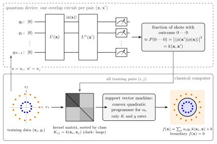
Figure 1. Classification with a quantum kernel. Top: for every pair of training points the device runs the encoding circuit \(U(\mathbf x)\) followed by the inverse encoding \(U^\dagger(\mathbf x')\) and records how often all qubits return \(0\), which estimates \(k(\mathbf x,\mathbf x')\) of Eq. (5). Bottom: the kernel matrix of the training set (here sorted by class) is the only input of the support vector machine, a convex quadratic programme for one coefficient \(\alpha_i\) per training point; the resulting decision function, Eq. (12), assigns the label of new points.
1.4 What a quantum kernel can and cannot be expected to deliver
A quantum kernel is useful only if it is hard to compute on a classical computer and, at the same time, suited to the data. Every circuit of this notebook runs on a classical simulator, so the first condition fails here by construction. Havlíček et al. ran the method on two superconducting qubits and conjectured that kernels of circuits of the type used here become hard to estimate classically when the circuits grow; no proof of this hardness is known. Liu, Arunachalam and Temme (2021) constructed a classification problem, based on the discrete logarithm, that a quantum-kernel SVM solves with high accuracy while no classical learner classifies it inverse-polynomially better than random guessing, provided the discrete logarithm is classically hard. This is a proof of principle with data built for the purpose and feature-map circuits designed for a fault-tolerant quantum computer. Huang et al. (2021) showed that classical learners that are given data can be competitive with quantum models even on problems derived from quantum circuits, and developed a method, based on prediction-error bounds, for assessing whether a quantum kernel can have an advantage on a given data set. Thanasilp et al. (2024) identified a general obstacle: for expressive encodings, entangled encoded states, global measurements or noise, the kernel values of different inputs concentrate exponentially in \(N\) around a fixed value, and resolving them requires exponentially many shots. Section 8 measures this effect. No practically relevant classical data set is known on which a quantum kernel has been shown to beat the best classical methods, and the rings of this notebook are classified equally well by a classical Gaussian kernel (Section 6).
1.5 Road map
Section 3 builds the classical machinery: the two data sets, the feature map of Eq. (1), the SVM and its dual problem, a solver in JAX checked against an independent reference, and the condition that a kernel must satisfy.
Section 4 defines the encoding circuit, proves the properties of the fidelity kernel, derives the kernel of the encoding without entangling gates in closed form, and implements the inversion and swap tests.
Section 5 classifies the rings with a six-qubit kernel: kernel matrices sorted by class, kernel principal component analysis, decision boundaries.
Section 6 compares test accuracies with linear and Gaussian kernels over random splits, each kernel with its bandwidth tuned on held-out training data.
Section 7 varies the encoding: the data scale, the number of qubits, and the entangling gates.
Section 8 measures the concentration of kernel values with \(N\) and its consequence for the number of shots, and Section 9 classifies with kernels estimated from a finite number of shots.
What you will learn
Physics
how a circuit with data-dependent angles maps classical data into the Hilbert space of \(N\) qubits, and how the overlap of two such states is measured by the inversion test and by the swap test;
why the kernel values of many-qubit encodings concentrate, and how this translates into a number of shots that grows exponentially with \(N\);
what is known about the advantage of quantum kernels, and why the problem of this notebook does not show one.
Numerical methods
the support vector machine, its dual problem derived with Lagrange multipliers, and the duality gap as a certificate of the solution;
accelerated projected gradient ascent with an exact projection onto a box intersected with a hyperplane;
kernel principal component analysis, bandwidth tuning on held-out data, and error bars over random splits.
Implementation practice
the encoding circuit with apply_gate, and the kernel matrix from jax.vmap over pairs of circuits, checked against the shortcut that a simulator offers, one state per data point;
many small quadratic programmes solved at once with jax.vmap over a lax.scan loop;
controls: matrices that are not positive semidefinite, detected by their eigenvalues; a linear kernel on the rings and labels shuffled at random, which must fall to the guessing level.
Prerequisites
01 — JAX: jit, vmap, lax.scan and explicit random keys;
No prior knowledge of machine learning beyond the idea of a training set is assumed; Section 3 derives everything that is used.
Configuration
Every notebook of this course starts with the same cell. Choose where to run (DEVICE) and the floating-point precision (PRECISION): "double" = float64/complex128 (default, recommended for physics), "single" = float32/complex64 (half the memory, faster on consumer GPUs, but watch the round-off). All code below derives its dtypes from RDTYPE/CDTYPE and its check tolerances from TOL, so nothing else needs to change.
Code
# ==============================================================================# CONFIGURATION -- adapt to your hardware, then run the notebook top to bottom# ==============================================================================DEVICE ="auto"# "auto": use a GPU if JAX finds one, else CPU | "cpu" | "gpu"PRECISION ="double"# "double": float64/complex128 | "single": float32/complex64import osif DEVICE =="cpu": os.environ["JAX_PLATFORMS"] ="cpu"# must be set BEFORE jax is importedimport stringfrom functools import partialimport mathimport numpy as npimport jaximport jax.numpy as jnpfrom jax import lax# Precision is configurable: "double" = float64/complex128 (default; needed for long time evolutions and# tight validation), "single" = float32/complex64 (half the memory, faster on consumer GPUs).# In a notebook PRECISION is defined in the Configuration cell; for this module use the env var QE_PRECISION.PRECISION =globals().get("PRECISION", os.environ.get("QE_PRECISION", "double"))jax.config.update("jax_enable_x64", PRECISION =="double")RDTYPE = jnp.float64 if PRECISION =="double"else jnp.float32 # real dtypeCDTYPE = jnp.complex128 if PRECISION =="double"else jnp.complex64 # complex dtype of all states/operatorsTOL =1e-10if PRECISION =="double"else1e-4# tolerance for sanity checks (asserts)_LETTERS = string.ascii_letters # the 52 einsum index labels a-z, A-Zimport timeimport matplotlib.pyplot as pltif DEVICE =="gpu"and jax.default_backend() =="cpu":print("WARNING: DEVICE='gpu' requested but JAX found no GPU -- running on CPU.")print(f"JAX {jax.__version__} | backend: {jax.default_backend()} | devices: {jax.devices()}")print(f"precision: {PRECISION} -> real {RDTYPE.__name__}, complex {CDTYPE.__name__}, check tolerance TOL={TOL:g}")
JAX 0.11.0 | backend: cpu | devices: [CpuDevice(id=0)]
precision: double -> real float64, complex complex128, check tolerance TOL=1e-10
2. Engine recap and notebook helpers
From the engine we take the gate application, the Hadamard gate, the rotations \(R_z\) and \(R_{ZZ}\), the SWAP gate (for the swap test), the all-zero state, Haar-random states and the bit-string sampler. The helper cell sets the plot style and defines a timer for the sections of the notebook.
Engine recap — the simulator primitives used in this notebook (click to expand)
# ==============================================================================# ENGINE RECAP: the functions of quantum_engine.py (SmoQ.jax) used in this notebook.# Each one is derived, with its mathematics and an independent check, in notebook 08b# (Chapter 3), 'Building the quantum simulator engine'.# States are rank-N tensors of shape (2,)*N; every operator acts through ONE einsum.# ==============================================================================# ----------------------------------------------------------------------------# 1. Elementary matrices: Paulis, Clifford generators, rotations# ----------------------------------------------------------------------------I2 = jnp.eye(2, dtype=CDTYPE)Z = jnp.array([[1, 0], [0, -1]], dtype=CDTYPE)H = jnp.array([[1, 1], [1, -1]], dtype=CDTYPE) / jnp.sqrt(2.0) # Hadamard: Z-basis <-> X-basisS = jnp.array([[1, 0], [0, 1j]], dtype=CDTYPE) # phase gate, S^2 = ZSDG = S.conj().TSWAP = jnp.array([[1, 0, 0, 0], [0, 0, 1, 0], [0, 1, 0, 0], [0, 0, 0, 1]], dtype=CDTYPE)ZZ = jnp.kron(Z, Z)def rz(theta):"""Rotation about z: Rz(theta) = exp(-i theta Z/2) = diag(e^{-i theta/2}, e^{+i theta/2}).""" e = jnp.exp(-0.5j* theta)return jnp.array([[e, 0], [0, jnp.conj(e)]], dtype=CDTYPE)def rpp(theta, PP):"""Two-qubit Pauli rotation exp(-i theta PP/2) for any product PP of two Pauli matrices (XX, YY, ZZ, XY, ...). Because (P x Q)^2 = 1 the same closed form as for single-qubit rotations holds: exp(-i theta PP/2) = cos(theta/2) 1_4 - i sin(theta/2) PP. These are the native entangling gates of trapped ions (XX) and the building blocks of Trotterised spin-chain evolution. """return jnp.cos(theta /2) * jnp.eye(4, dtype=CDTYPE) -1j* jnp.sin(theta /2) * PPdef rzz(theta):"""exp(-i theta Z(x)Z / 2) -- diagonal: diag(e^{-i t/2}, e^{+i t/2}, e^{+i t/2}, e^{-i t/2})."""return rpp(theta, ZZ)# ----------------------------------------------------------------------------# 2. THE core primitive: a k-qubit operator acting on a tensor through ONE einsum# ----------------------------------------------------------------------------def apply_gate(psi, U, qubits):"""Apply a k-qubit operator U to the axes `qubits` of the tensor `psi`. MATH ---- One qubit (k=1), target q: psi'[s_0,..,a,..,s_{N-1}] = sum_b U[a,b] psi[s_0,..,b,..,s_{N-1}] Two qubits (k=2), targets (q1,q2); the 4x4 matrix is reshaped to U[a1,a2,b1,b2]: psi'[.., a1, .., a2, ..] = sum_{b1,b2} U[a1,a2,b1,b2] psi[.., b1, .., b2, ..] This IS the action of (1 x .. x U x .. x 1) -- written without ever building it. EINSUM TRANSLATION (generated automatically below) ------------------ N=3, q=1 : "db,abc->adc" d = new (output) index of qubit 1 N=4, q=(1,3) : "efbd,abcd->aecf" e,f = new indices of qubits 1 and 3 Recipe: label the axes of psi with letters a,b,c,...; give every target qubit a NEW letter (the next unused ones); U carries (new letters)+(old letters of the targets); the output is psi's labels with the target letters replaced by the new ones. IMPLEMENTATION NOTES -------------------- * reshape of U: (2^k,2^k) -> (2,)*2k. Row index = (a1..ak), column = (b1..bk), and the FIRST qubit in `qubits` is the most significant bit of the small matrix, i.e. it corresponds to the LEFT factor of kron(A,B). * `qubits` may be any distinct axes in any order: non-neighbouring gates cost the same. * U need not be unitary: projectors, Kraus operators and Hamiltonian terms reuse this. * psi may be ANY tensor with those axes of size 2: a state (rank N), a density tensor (rank 2N: ket axes 0..N-1, bra axes N..2N-1), ... COST O(2^k * 2^N) operations, O(2^N) memory (dense matrix: O(4^N) both). JAX `qubits` must be static Python ints (they define the einsum string); psi and U are traced, so the function can sit inside jit / grad / vmap / scan. """ qubits =tuple(int(q) for q in qubits) k, n =len(qubits), psi.ndim U = jnp.asarray(U, dtype=psi.dtype).reshape((2,) * (2* k)) # matrix -> rank-2k tensor inp =list(_LETTERS[:n]) # labels of psi's axes new = _LETTERS[n:n + k] # fresh labels for the outputs out = inp.copy()for a, q inzip(new, qubits): out[q] = a # target axes get the new labels sub =f"{''.join(new)}{''.join(inp[q] for q in qubits)},{''.join(inp)}->{''.join(out)}"return jnp.einsum(sub, U, psi)# ----------------------------------------------------------------------------# 3. State preparation# ----------------------------------------------------------------------------def zero_state(N):"""|00...0>: a rank-N tensor of zeros with a single 1 at index (0,0,...,0). JAX arrays are immutable: `.at[idx].set(v)` returns an updated COPY (functional style)."""return jnp.zeros((2,) * N, dtype=CDTYPE).at[(0,) * N].set(1.0)def haar_state(key, N):"""Haar-random pure state: a complex Gaussian vector, normalised. (The Gaussian measure is unitarily invariant, so the direction is uniformly distributed.) `key` is an explicit JAX PRNG key -- same key, same state: reproducible science.""" k1, k2 = jax.random.split(key) v = jax.random.normal(k1, (2,) * N) +1j* jax.random.normal(k2, (2,) * N)return (v / jnp.linalg.norm(v)).astype(CDTYPE)# ----------------------------------------------------------------------------# 6. Measurements (Born rule, collapse, sampling)# ----------------------------------------------------------------------------_BASIS_ROT = {"Z": I2, "X": H, "Y": H @ SDG} # U maps the eigenbasis of the Pauli to |0>,|1>: P = U^dag Z Udef sample_bitstrings(key, psi, shots, bases=None):"""Sample `shots` outcomes of measuring ALL qubits (no collapse bookkeeping needed). MATH p(s) = |psi[s]|^2 ; optional per-qubit bases string like 'XZY' rotates first. IMPLEMENTATION `jax.random.categorical` draws flat indices from log-probabilities; the bits are unpacked with shifts: s_q = (i >> (N-1-q)) & 1 (qubit 0 = most significant bit). Returns an int array of shape (shots, N). """ N = psi.ndimif bases isnotNone:for q, b inenumerate(bases): psi = apply_gate(psi, _BASIS_ROT[b], [q]) logp = jnp.log(jnp.clip(jnp.abs(psi.reshape(-1)) **2, 1e-300, None)) idx = jax.random.categorical(key, logp, shape=(shots,))return (idx[:, None] >> jnp.arange(N -1, -1, -1)[None, :]) &1
Code
# ==============================================================================# PLOT STYLE + small helpers# ==============================================================================PALETTE = ["#2a78d6", "#eb6834", "#1baf7a", "#eda100", "#e87ba4", "#4a3aa7"] # colour-blind-friendly, fixed orderMARKERS = ["o", "s", "^", "D", "v", "P"]plt.rcParams.update({"axes.prop_cycle": plt.cycler(color=PALETTE), "axes.grid": True,"grid.alpha": 0.3, "font.size": 10, "legend.frameon": False})SECTION_TIMES = {} # wall-clock seconds per section, printed in Section 10_T0 = [time.perf_counter(), None]def section_timer(name):"""Close the timing of the previous section and open a new one called `name`.""" now = time.perf_counter()if _T0[1] isnotNone: SECTION_TIMES[_T0[1]] = now - _T0[0] _T0[0], _T0[1] = now, namedef max_abs(a):"""Largest absolute entry of an array, as a Python float."""returnfloat(jnp.max(jnp.abs(jnp.asarray(a))))def mean_and_se(x):"""Sample mean and standard error of the mean of a 1D array of independent samples.""" x = np.asarray(x, dtype=float)returnfloat(np.mean(x)), float(np.std(x, ddof=1) / np.sqrt(x.size))section_timer("3 classical kernel methods")
3. Classical kernel methods
3.1 Two data sets of concentric rings
Each data set consists of points \(\mathbf x=(r\cos\vartheta,\ r\sin\vartheta)\) with a uniformly distributed angle \(\vartheta\) and a radius \(r=R_c+\sigma\xi\), where \(R_c\) is the radius of ring \(c\) and \(\xi\) a standard normal random number. The two-ring set has \(R=(0.3,\,0.8)\) with \(\sigma=0.13\) and 100 points per ring; the three-ring set has \(R=(0.2,\,0.55,\,0.9)\) with \(\sigma=0.07\) and 70 points per ring. The noise leaves only narrow radial gaps between neighbouring rings, so that a classifier has to place its boundary accurately from a limited number of training points; with \(\sigma=0\) the gaps are wide and every reasonable kernel classifies all test points correctly.
A random split draws 60 % of the points as training set and keeps the rest as test set. All results that depend on the split are repeated over ten splits, each with its own random key derived from one master key, and reported as mean \(\pm\) standard error.
Code
# ==============================================================================# STEP 1: the two data sets and the random train/test splits# ==============================================================================def make_rings(key, n_per_class, radii, noise):"""Points on concentric rings with Gaussian radial noise; label c for ring c. MATH theta ~ U[0, 2 pi), r = R_c + noise * xi with xi ~ N(0, 1), x = (r cos theta, r sin theta). Returns X of shape (n_classes * n_per_class, 2) and integer labels of the same length (class blocks in order). """ keys = jax.random.split(key, 2*len(radii)) X, y = [], []for c, R inenumerate(radii): theta =2* jnp.pi * jax.random.uniform(keys[2* c], (n_per_class,), dtype=RDTYPE) r = R + noise * jax.random.normal(keys[2* c +1], (n_per_class,), dtype=RDTYPE) X.append(jnp.stack([r * jnp.cos(theta), r * jnp.sin(theta)], axis=1)) y.append(np.full(n_per_class, c))return jnp.concatenate(X), np.concatenate(y)def random_splits(key, M, n_train, n_splits):"""`n_splits` random train/test splits of M points; split k uses its own key jax.random.split(key, n_splits)[k]. Returns two int arrays of shapes (n_splits, n_train) and (n_splits, M - n_train). JAX jax.vmap over the keys draws all permutations in one call. """ keys = jax.random.split(key, n_splits) perms = np.asarray(jax.vmap(lambda k: jax.random.permutation(k, M))(keys))return perms[:, :n_train], perms[:, n_train:]N_SPLITS, TRAIN_FRACTION =10, 0.6DATA = {}for name, key, n_per, radii, noise in [("two rings", 11, 100, (0.3, 0.8), 0.13), ("three rings", 12, 70, (0.2, 0.55, 0.9), 0.07)]: X, y = make_rings(jax.random.PRNGKey(key), n_per, radii, noise) M = X.shape[0] tr, te = random_splits(jax.random.PRNGKey(100+ key), M, int(TRAIN_FRACTION * M), N_SPLITS) DATA[name] =dict(X=X, y=y, n_classes=len(radii), radii=radii, train=tr, test=te) r = np.linalg.norm(np.asarray(X), axis=1) ranges =", ".join(f"[{r[y == c].min():.3f}, {r[y == c].max():.3f}]"for c inrange(len(radii)))print(f"{name:11s}: M = {M} points, {len(radii)} classes, {tr.shape[1]} training / {te.shape[1]} test points "f"per split; radii of the classes {ranges}")assertall(len(set(d["train"][0]) |set(d["test"][0])) == d["X"].shape[0] for d in DATA.values())CLASS_COLORS = [PALETTE[0], PALETTE[1], PALETTE[2]]fig, axes = plt.subplots(1, 2, figsize=(9.0, 4.2))for ax, (name, d) inzip(axes, DATA.items()):for c inrange(d["n_classes"]): Xc = np.asarray(d["X"])[d["y"] == c] ax.scatter(Xc[:, 0], Xc[:, 1], s=14, color=CLASS_COLORS[c], label=f"class {c} ($R={d['radii'][c]}$)") ax.set_aspect("equal") ax.set_xlabel("$x_1$") ax.set_ylabel("$x_2$") ax.set_title(name) ax.legend(loc="upper right", fontsize=8)fig.tight_layout()plt.show()
two rings : M = 200 points, 2 classes, 120 training / 80 test points per split; radii of the classes [0.021, 0.534], [0.575, 1.188]
three rings: M = 210 points, 3 classes, 126 training / 84 test points per split; radii of the classes [0.048, 0.370], [0.405, 0.698], [0.733, 1.053]
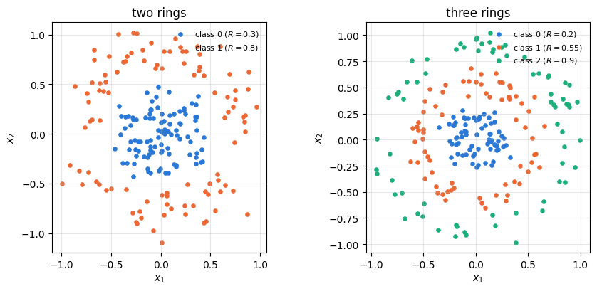
The radii of the classes do not overlap in these two samples, but the gaps between them are narrow: \(0.534\) to \(0.575\) between the two rings, \(0.370\) to \(0.405\) and \(0.698\) to \(0.733\) in the three-ring set. The largest \(\vert\mathbf x\vert\) is about one, so the data fill roughly the square \([-1,1]^2\); the encoding of Section 4 turns coordinates into rotation angles, and the size of the data range matters there.
3.2 A feature map that makes the rings linearly separable
The cell evaluates Eq. (3) on the two-ring set both ways, as the scalar product of the explicit feature vectors of Eq. (1) and as \((\mathbf x\cdot\mathbf x')^2\), and then classifies all points by the plane \(\phi_1+\phi_3=r_c^2\) in feature space with \(r_c=0.55\), halfway between the two rings.
Code
# ==============================================================================# STEP 2: the kernel trick on Eq. (1), and the rings in feature space# ==============================================================================def poly_features(X):"""Feature map of Eq. (1): phi(x) = (x1^2, sqrt(2) x1 x2, x2^2)."""return jnp.stack([X[:, 0] **2, jnp.sqrt(2.0) * X[:, 0] * X[:, 1], X[:, 1] **2], axis=1)X2, y2 = DATA["two rings"]["X"], DATA["two rings"]["y"]Phi = poly_features(X2)err_trick = max_abs(Phi @ Phi.T - (X2 @ X2.T) **2)print(f"max |phi(x).phi(x') - (x.x')^2| over all {X2.shape[0] **2} pairs: {err_trick:.2e}")assert err_trick < TOLr_c =0.55pred_plane = np.asarray(Phi[:, 0] + Phi[:, 2] > r_c **2).astype(int) # outer ring above the planeacc_plane =float(np.mean(pred_plane == y2))print(f"plane phi_1 + phi_3 = {r_c}^2 classifies {100* acc_plane:.1f} % of the {len(y2)} points correctly")assert acc_plane >0.95fig, ax = plt.subplots(figsize=(4.6, 4.2))for c inrange(2): ax.scatter(np.asarray(Phi[y2 == c, 0]), np.asarray(Phi[y2 == c, 2]), s=14, color=CLASS_COLORS[c], label=f"class {c}")u = np.linspace(0, r_c **2, 50)ax.plot(u, r_c **2- u, "k--", lw=1.5, label=r"$\phi_1+\phi_3=r_c^2$")ax.set_xlabel(r"$\phi_1=x_1^2$")ax.set_ylabel(r"$\phi_3=x_2^2$")ax.set_title("two rings in feature space")ax.legend(fontsize=8)fig.tight_layout()plt.show()
max |phi(x).phi(x') - (x.x')^2| over all 40000 pairs: 4.44e-16
plane phi_1 + phi_3 = 0.55^2 classifies 100.0 % of the 200 points correctly
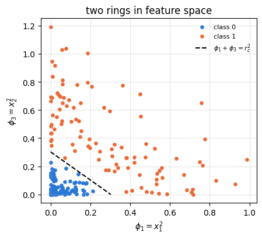
The two expressions agree to round-off, and in the plane \((\phi_1,\phi_3)\) the rings become two groups separated by a straight line: the rule \(r<0.55\), chosen here by looking at all the data, classifies every point correctly. A learning algorithm has to find such a rule from the training data alone, which is the job of the SVM.
3.3 The support vector machine and its dual problem
Let \(\boldsymbol\phi_i=\boldsymbol\phi(\mathbf x_i)\) and \(y_i\in\{-1,+1\}\). A plane \(\mathbf w\cdot\boldsymbol\phi+b=0\) classifies point \(i\) correctly with a safety margin if \(y_i(\mathbf w\cdot\boldsymbol\phi_i+b)\geq1\). The distance of the planes \(\mathbf w\cdot\boldsymbol\phi+b=\pm1\) from the decision plane is \(1/\vert\mathbf w\vert\), so maximising this margin means minimising \(\vert\mathbf w\vert^2\). Overlapping classes cannot satisfy all constraints, and the soft-margin SVM allows violations \(\xi_i\geq0\) at a cost \(C\) per unit:
A large \(C\) punishes violations strongly and fits the training data closely; a small \(C\) accepts more violations in exchange for a wider margin. We use \(C=10\) throughout. To remove \(\mathbf w\), which may live in a huge space, we introduce Lagrange multipliers \(\alpha_i\geq0\) for the margin constraints and \(\mu_i\geq0\) for \(\xi_i\geq0\),
For fixed multipliers, the minimum of \(\mathcal L\) over \(\mathbf w,b,\boldsymbol\xi\) is a lower bound on the optimum of Eq. (6), because at any feasible point the subtracted terms are non-negative (weak duality). The dual problem maximises this bound over the multipliers, and for a convex problem such as Eq. (6) the largest bound equals the optimum (strong duality). At the minimum over the primal variables the derivatives vanish:
The first line says that the optimal \(\mathbf w\) is a combination of the training feature vectors. Substituting the three conditions back into Eq. (7), the terms with \(b\) and \(\xi_i\) cancel, and \(\frac12\vert\mathbf w\vert^2-\sum_i\alpha_iy_i\mathbf w\cdot\boldsymbol\phi_i=-\frac12\vert\mathbf w\vert^2\) leaves the dual problem
with \(K_{ij}=\boldsymbol\phi_i\cdot\boldsymbol\phi_j=k(\mathbf x_i,\mathbf x_j)\). In matrix form \(D=\mathbf 1\cdot\boldsymbol\alpha-\frac12\boldsymbol\alpha^{\rm T}Q\boldsymbol\alpha\) with \(Q_{ij}=y_iy_jK_{ij}\). The feature vectors have disappeared; the kernel matrix is all the training needs.
The optimality (Karush–Kuhn–Tucker) conditions classify the training points. Points with \(\alpha_i=0\) lie on or outside the margin, \(y_i(\mathbf w\cdot\boldsymbol\phi_i+b)\geq1\), and do not enter \(\mathbf w\); points with \(0<\alpha_i<C\) lie exactly on the margin, \(y_i(\mathbf w\cdot\boldsymbol\phi_i+b)=1\); points with \(\alpha_i=C\) have \(y_i(\mathbf w\cdot\boldsymbol\phi_i+b)\leq1\) and in general violate it. The points with \(\alpha_i>0\) are the support vectors. Each margin point determines the offset,
\[b=y_i-\sum_j\alpha_jy_jK_{ji}\qquad\text{for any } i \text{ with } 0<\alpha_i<C, \tag{10}\]
and we average Eq. (10) over all such points to reduce round-off. Two numbers certify a solution. The primal objective of Eq. (6), evaluated with \(\mathbf w\) from Eq. (8) and the smallest admissible slacks \(\xi_i=\max(0,1-y_if(\mathbf x_i))\), is
and weak duality guarantees \(P\geq D\) for any feasible \(\boldsymbol\alpha\), with equality only at the optimum. The relative duality gap\((P-D)/P\) therefore measures the distance from the solution without knowing it. A new point is classified by the sign of the decision function
which again needs only kernel values, now between the new point and the training points.
3.4 Solving the dual problem by accelerated projected gradient ascent
For a positive semidefinite kernel (Section 3.5), Eq. (9) maximises a concave quadratic function over a convex set, the box \([0,C]^M\) intersected with the hyperplane \(\mathbf y\cdot\boldsymbol\alpha=0\). Projected gradient ascent takes a step along the gradient \(\nabla D=\mathbf 1-Q\boldsymbol\alpha\) and returns to the set by the Euclidean projection \(\Pi\),
where the step \(\eta\) is the inverse of the largest curvature of \(D\). The accelerated version (FISTA, Beck and Teboulle, 2009) applies the same step at an extrapolated point \(\mathbf z_t=\boldsymbol\alpha_t+\frac{\tau_t-1}{\tau_{t+1}}(\boldsymbol\alpha_t-\boldsymbol\alpha_{t-1})\), with \(\tau_1=1\) and \(\tau_{t+1}=\frac12\big(1+\sqrt{1+4\tau_t^2}\big)\), which reduces the error of \(D\) after \(n\) steps from \(O(1/n)\) to \(O(1/n^2)\).
The projection has a closed form up to one number. Minimising \(\frac12\vert\boldsymbol\alpha-\mathbf v\vert^2\) over the box with a multiplier \(\mu\) for the hyperplane gives, coordinate by coordinate,
Because \(y_i^2=1\), every term \(y_i\alpha_i(\mu)\) is a non-increasing function of \(\mu\), so \(h\) is non-increasing; at \(\mu=\pm(\max_i\vert v_i\vert+C)\) it has opposite signs, and bisection finds its root to machine precision in about 50 halvings.
JAX practice. The iteration of Eq. (13) is a lax.scan over a fixed number of steps, and the bisection inside the projection is another lax.scan, so the whole solver compiles into one XLA program. Wrapping it in jax.vmap solves many SVMs, for different splits, bandwidths or classes, in one call; Sections 6, 7 and 9 rely on this.
The cell implements the solver, runs it on the two-ring training set of the first split with the polynomial kernel of Eq. (3), and checks the solution in three ways: the constraints, the duality gap, and, if the library scikit-learn is installed, a comparison with its SVM, which solves the same Eq. (9) by a different method (sequential minimal optimisation).
Code
# ==============================================================================# STEP 3: the SVM dual problem, Eq. (9), by FISTA with the exact projection of Eq. (14)# ==============================================================================C_SVM =10.0# cost of a margin violation, Eq. (6), the same for every kernelN_ITER =600# FISTA iterations for the many SVMs of Sections 6, 7, 9 (checked below against 4000)def project_box_hyperplane(v, y, C, n_bisect=50):"""Euclidean projection of v onto {a : 0 <= a_i <= C, sum_i y_i a_i = 0}, Eq. (14). MATH a_i(mu) = clip(v_i - mu y_i, 0, C); h(mu) = sum_i y_i a_i(mu) is non-increasing in mu (y_i^2 = 1), h(-B) >= 0 >= h(B) for B = max|v| + C; bisection on mu for the root of h. JAX the bisection is a lax.scan with a fixed number of halvings (no Python loop, no data-dependent exit). """ B = jnp.max(jnp.abs(v)) + Cdef halve(bounds, _): lo, hi = bounds mu =0.5* (lo + hi) h = jnp.dot(y, jnp.clip(v - mu * y, 0.0, C))return (jnp.where(h >0, mu, lo), jnp.where(h >0, hi, mu)), None (lo, hi), _ = lax.scan(halve, (-B, B), None, length=n_bisect)return jnp.clip(v -0.5* (lo + hi) * y, 0.0, C)@partial(jax.jit, static_argnames=("n_iter",))def svm_dual_solve(K, y, C, n_iter=N_ITER, a0=None):"""Soft-margin SVM: maximise D(a) = sum a - a^T Q a / 2, Q = (y y^T) * K, over 0 <= a <= C, y.a = 0 (Eq. 9). MATH FISTA: a_{t+1} = Proj(z_t + eta (1 - Q z_t)), eta = 1 / lambda_max(Q), z_{t+1} = a_{t+1} + (t_k - 1)/t_{k+1} (a_{t+1} - a_t), t_{k+1} = (1 + sqrt(1 + 4 t_k^2)) / 2. offset b from Eq. (10), averaged over the margin points 0 < a_i < C. COST O(M^2) per iteration (one matrix-vector product) + O(M n_bisect) for the projection. Returns (alpha, b). `a0` (optional) is a feasible starting point. """ Q = (y[:, None] * y[None, :]) * K eta =1.0/ jnp.linalg.eigvalsh(Q)[-1]def step(carry, _): a, z, t = carry a_new = project_box_hyperplane(z + eta * (1.0- Q @ z), y, C) t_new =0.5* (1.0+ jnp.sqrt(1.0+4.0* t * t))return (a_new, a_new + (t -1.0) / t_new * (a_new - a), t_new), None a0 = jnp.zeros_like(y) if a0 isNoneelse a0 # default start: alpha = 0 (feasible) (alpha, _, _), _ = lax.scan(step, (a0, a0, jnp.asarray(1.0, dtype=y.dtype)), None, length=n_iter) g = y - K @ (alpha * y) # y_i - sum_j a_j y_j K_ji, Eq. (10) on_margin = (alpha >1e-6* C) & (alpha < (1.0-1e-6) * C) support = alpha >1e-6* C b = jnp.where(jnp.any(on_margin), jnp.sum(jnp.where(on_margin, g, 0.0)) / jnp.maximum(jnp.sum(on_margin), 1), jnp.sum(jnp.where(support, g, 0.0)) / jnp.maximum(jnp.sum(support), 1))return alpha, bdef svm_decision(alpha, b, y, K_new_train):"""Decision function of Eq. (12) for new points: f = K_new_train @ (alpha * y) + b."""return K_new_train @ (alpha * y) + bdef svm_duality_gap(K, y, alpha, b, C):"""Primal P of Eq. (11) and dual D of Eq. (9); returns (P, D). P >= D, with equality at the optimum.""" Q = (y[:, None] * y[None, :]) * K quad = alpha @ Q @ alpha f = svm_decision(alpha, b, y, K)return0.5* quad + C * jnp.sum(jnp.maximum(0.0, 1.0- y * f)), jnp.sum(alpha) -0.5* quadtr0, te0 = DATA["two rings"]["train"][0], DATA["two rings"]["test"][0]Xtr, Xte = X2[tr0], X2[te0]ytr, yte = jnp.where(y2[tr0] ==1, 1.0, -1.0), jnp.where(y2[te0] ==1, 1.0, -1.0)K_poly_tr, K_poly_te = (Xtr @ Xtr.T) **2, (Xte @ Xtr.T) **2for n_iter in (N_ITER, 4000): alpha, b = svm_dual_solve(K_poly_tr, ytr, C_SVM, n_iter=n_iter) P, D = svm_duality_gap(K_poly_tr, ytr, alpha, b, C_SVM) f_te = svm_decision(alpha, b, ytr, K_poly_te) acc_te =float(jnp.mean(jnp.sign(f_te) == yte)) acc_tr =float(jnp.mean(jnp.sign(svm_decision(alpha, b, ytr, K_poly_tr)) == ytr))print(f"{n_iter:5d} iterations: D = {float(D):.6f}, P = {float(P):.6f}, gap (P-D)/P = {float((P - D) / P):.1e}; "f"|y.alpha| = {abs(float(alpha @ ytr)):.1e}, {int(jnp.sum(alpha >1e-6* C_SVM))} support vectors; "f"train {100* acc_tr:.1f} %, test {100* acc_te:.1f} %")assertfloat(jnp.min(alpha)) >=0.0andfloat(jnp.max(alpha)) <= C_SVM andabs(float(alpha @ ytr)) <1e-8assertfloat((P - D) / P) <1e-6alpha_ref, b_ref, f_ref = alpha, b, f_tetry:from sklearn.svm import SVC clf = SVC(kernel="precomputed", C=C_SVM, tol=1e-8).fit(np.asarray(K_poly_tr), np.asarray(ytr)) f_sk = clf.decision_function(np.asarray(K_poly_te))print(f"scikit-learn SVC on the same kernel: b = {clf.intercept_[0]:.6f} (ours {float(b_ref):.6f}), "f"max |f - f_sklearn| on the test points = {np.max(np.abs(np.asarray(f_ref) - f_sk)):.1e}")assert np.max(np.abs(np.asarray(f_ref) - f_sk)) <1e-3exceptImportError:print("scikit-learn not installed: the duality gap above is the certificate of the solution")
600 iterations: D = 91.157414, P = 91.207698, gap (P-D)/P = 5.5e-04; |y.alpha| = 6.0e-14, 17 support vectors; train 100.0 %, test 100.0 %
4000 iterations: D = 91.157467, P = 91.157467, gap (P-D)/P = 9.2e-11; |y.alpha| = 5.3e-14, 16 support vectors; train 100.0 %, test 100.0 %
scikit-learn SVC on the same kernel: b = -2.292358 (ours -2.292358), max |f - f_sklearn| on the test points = 3.9e-07
After 4000 iterations the relative duality gap is \(9\times10^{-11}\) and the constraint \(\mathbf y\cdot\boldsymbol\alpha=0\) holds to round-off; scikit-learn, installed on the machine that executed this notebook, gives the same offset \(b\) and decision values that agree with ours to \(4\times10^{-7}\). With 600 iterations the gap is \(5.5\times10^{-4}\) and the predicted labels are the same. The many SVMs of Sections 6, 7 and 9 use this cheaper setting, and Section 5 uses 4000 iterations. With the kernel of Eq. (3) the SVM classifies all training and test points of this split correctly, and only 16 of the 120 training points are support vectors and enter the decision function.
3.5 Valid kernels are positive semidefinite
A function \(k\) is the scalar product of some feature map only if every kernel matrix it produces is positive semidefinite (PSD), \(\mathbf c^{\rm T}K\mathbf c\geq0\) for every real vector \(\mathbf c\). The necessity is one line,
and the converse also holds: a symmetric function all of whose kernel matrices are PSD is the scalar product of some feature map (the Moore–Aronszajn theorem; Mercer’s theorem gives an explicit construction for continuous kernels; Schölkopf and Smola, 2002). For the SVM the property is essential: with \(Q=\mathrm{diag}(\mathbf y)\,K\,\mathrm{diag}(\mathbf y)\) the function \(D\) of Eq. (9) is concave exactly when \(K\) is PSD, and only then is every local maximum a global one, so that projected gradient ascent is guaranteed to reach the optimal value. The maximiser \(\boldsymbol\alpha\) itself need not be unique: the polynomial kernel of Eq. (3) has rank three, and different \(\boldsymbol\alpha\) can give the same \(\mathbf w\) and the same decision function. The cell checks the smallest eigenvalue of three candidates on the two-ring set: the polynomial kernel of Eq. (3), the Gaussian kernel, and the “sigmoid kernel” \(\tanh(2\,\mathbf x\cdot\mathbf x'-1)\), a function borrowed from neural networks that is often used as a kernel although it is not PSD for most values of its parameters. It then trains the SVM with the sigmoid matrix from four different feasible starting points and compares the solutions.
Code
# ==============================================================================# STEP 4: positive semidefiniteness of three candidate kernels (wrong control included)# ==============================================================================def rbf_kernel(XA, XB, gamma):"""Gaussian (RBF) kernel k(x, x') = exp(-gamma |x - x'|^2).""" d2 = jnp.sum((XA[:, None, :] - XB[None, :, :]) **2, axis=-1)return jnp.exp(-gamma * d2)sigmoid =lambda XA, XB: jnp.tanh(2.0* XA @ XB.T -1.0)candidates = {"(x.x')^2": (X2 @ X2.T) **2, "exp(-3|x-x'|^2)": rbf_kernel(X2, X2, 3.0), "tanh(2x.x' - 1)": sigmoid(X2, X2)}lam_min = {}for name, Kc in candidates.items(): lam = np.linalg.eigvalsh(np.asarray(Kc)) lam_min[name] = lam[0]print(f"{name:16s}: smallest eigenvalue {lam[0]:+.3e}, largest {lam[-1]:.3e}, "f"{int(np.sum(lam <-1e-8* lam[-1]))} negative eigenvalues")assert lam_min["(x.x')^2"] >-TOL *1e3and lam_min["exp(-3|x-x'|^2)"] >-TOL *1e3assert lam_min["tanh(2x.x' - 1)"] <-1.0# wrong control in the SVM: the non-PSD matrix, solved from four different feasible starting pointsK_bad, K_bad_te = sigmoid(Xtr, Xtr), sigmoid(Xte, Xtr)sols = []for k inrange(4): a_start =Noneif k ==0else project_box_hyperplane( C_SVM * jax.random.uniform(jax.random.PRNGKey(40+ k), ytr.shape, dtype=RDTYPE), ytr, C_SVM) a_k, b_k = svm_dual_solve(K_bad, ytr, C_SVM, n_iter=4000, a0=a_start) sols.append((a_k, b_k))spread =max(max_abs(a_k - sols[0][0]) for a_k, _ in sols)a_bad, b_bad = sols[0]a_np, y_np = np.asarray(a_bad), np.asarray(ytr)sv = a_np >1e-6* C_SVMfree = sv & (a_np < (1.0-1e-6) * C_SVM) # 0 < alpha_i < CQ_free = (y_np[:, None] * y_np[None, :] * np.asarray(K_bad))[np.ix_(free, free)]B_tan = np.linalg.svd(y_np[free][None, :])[2][1:].T # orthonormal basis of {u : y_free . u = 0}lam_free = np.linalg.eigvalsh(Q_free)[0]lam_tan = np.linalg.eigvalsh(B_tan.T @ Q_free @ B_tan)[0]grad =1.0- (y_np[:, None] * y_np[None, :] * np.asarray(K_bad)) @ a_np # gradient of Dnu = np.mean(grad[free] * y_np[free]) # multiplier of y.alpha = 0red = grad - nu * y_np # reduced gradient: 0 free, <= 0 at 0, >= 0 at Cacc_bad =float(jnp.mean(jnp.sign(svm_decision(a_bad, b_bad, ytr, K_bad_te)) == yte))print(f"SVM with tanh(2x.x' - 1): lambda_min on the training set {np.linalg.eigvalsh(np.asarray(K_bad))[0]:+.2f}; "f"max |alpha - alpha_0| over 4 starts = {spread:.1e}; test accuracy {100* acc_bad:.1f} %")print(f" {int(sv.sum())} support vectors, {int(sv.sum() - free.sum())} at alpha = C and {int(free.sum())} free; "f"lambda_min of Q on the free coordinates {lam_free:+.2f}, on the free coordinates with y.u = 0 {lam_tan:+.3f}")print(f" reduced gradient: max |.| on the free coordinates {np.max(np.abs(red[free])):.1e}, "f"max at alpha = 0 {np.max(red[~sv]):+.3f}, min at alpha = C {np.min(red[sv &~free]):+.3f}")
SVM with tanh(2x.x' - 1): lambda_min on the training set -81.51; max |alpha - alpha_0| over 4 starts = 7.1e-04; test accuracy 100.0 %
16 support vectors, 10 at alpha = C and 6 free; lambda_min of Q on the free coordinates -3.92, on the free coordinates with y.u = 0 +0.028
reduced gradient: max |.| on the free coordinates 8.6e-06, max at alpha = 0 -0.010, min at alpha = C +0.082
The polynomial and Gaussian kernels have no negative eigenvalues beyond round-off; the sigmoid matrix has 51 negative eigenvalues out of 200, the smallest \(-136\), so it is not the scalar product of any feature map. Without positivity \(D\) is not concave and the SVM loses the guarantee that a maximum it finds is the global one. On these data the loss does not show in the result: the four runs end at the same \(\boldsymbol\alpha\) to \(7\times10^{-4}\) and the classifier is correct on all test points. The end point has 16 support vectors, 10 of them at the bound \(\alpha_i=C\) and 6 free. On the free coordinates \(Q\) still has a negative eigenvalue, \(-3.9\), but along the directions that keep \(\mathbf y\cdot\boldsymbol\alpha=0\) its smallest eigenvalue is \(+0.03\), the reduced gradient vanishes on the free coordinates and points out of the box at both bounds. These are the conditions of a local maximum; nothing certifies that it is the global one. A non-PSD matrix is detected by its eigenvalues, the check that this cell makes; Section 9 meets the problem again, because a kernel matrix estimated from finitely many shots is not exactly PSD.
3.6 More than two classes
For the three-ring set we use the one-versus-rest construction: one SVM per class \(c\) with labels \(y_i=+1\) for class \(c\) and \(-1\) for all others, and the label of a new point is the class whose decision function \(f_c(\mathbf x)\) is largest. The \(n_{\rm c}\) problems share the kernel matrix and differ only in \(\mathbf y\), so they are solved in one vmap call. The next cell packs this, together with batching over splits, into two functions used for the rest of the notebook: fit_and_score trains and tests a batch of splits with given kernel matrices, and tune_and_score chooses the bandwidth of a kernel for every split by holding out one third of the training points.
Code
# ==============================================================================# STEP 5: batched training and testing (splits x classes), and bandwidth tuning on held-out data# ==============================================================================@partial(jax.jit, static_argnames=("n_iter",))def svm_solve_batch(K_batch, Y_batch, C, n_iter=N_ITER):"""jax.vmap of svm_dual_solve over a batch of (kernel matrix, targets): (B, m, m), (B, m) -> (B, m), (B,)."""return jax.vmap(lambda K, y: svm_dual_solve(K, y, C, n_iter=n_iter))(K_batch, Y_batch)def ovr_targets(labels, n_classes):"""+-1 targets: one problem (class 1 versus class 0) for two classes, one per class (one versus rest) otherwise.""" labels = np.asarray(labels)if n_classes ==2:return np.where(labels ==1, 1.0, -1.0)[None]return np.stack([np.where(labels == c, 1.0, -1.0) for c inrange(n_classes)])def predict_from_decisions(F):"""F of shape (n_problems, ..., m): label 1 if f > 0 for one problem, the arg-max over problems otherwise."""return (F[0] >0).astype(int) if F.shape[0] ==1else np.argmax(F, axis=0)def fit_and_score(K_full, labels, train_idx, test_idx, n_classes, C=C_SVM, n_iter=N_ITER):"""Train on every split and return (test accuracies, train accuracies), each of shape (S,). K_full (M, M) kernel matrix of all points, or (S, M, M), one per split train_idx (S, m_tr) and test_idx (S, m_te) integer index arrays All S * n_problems SVMs are solved in one batched call. """ K_full = np.asarray(K_full) S = train_idx.shape[0]if K_full.ndim ==2: K_full = np.broadcast_to(K_full, (S,) + K_full.shape) K_tr = np.stack([K_full[s][np.ix_(train_idx[s], train_idx[s])] for s inrange(S)]) K_te = np.stack([K_full[s][np.ix_(test_idx[s], train_idx[s])] for s inrange(S)]) Y = np.stack([ovr_targets(labels[train_idx[s]], n_classes) for s inrange(S)]) # (S, P, m_tr) P = Y.shape[1] alpha, b = svm_solve_batch(jnp.asarray(np.repeat(K_tr, P, axis=0)), jnp.asarray(Y.reshape(S * P, -1)), C, n_iter=n_iter) ay = (np.asarray(alpha) * Y.reshape(S * P, -1)).reshape(S, P, -1) b = np.asarray(b).reshape(S, P, 1) F_te = np.einsum("sij,spj->psi", K_te, ay) + np.moveaxis(b, 1, 0) # (P, S, m_te) F_tr = np.einsum("sij,spj->psi", K_tr, ay) + np.moveaxis(b, 1, 0) acc_te = np.mean(predict_from_decisions(F_te) == labels[test_idx], axis=1) acc_tr = np.mean(predict_from_decisions(F_tr) == labels[train_idx], axis=1)return acc_te, acc_trdef tune_and_score(kernels, labels, train_idx, test_idx, n_classes, C=C_SVM):"""Bandwidth chosen per split on held-out training data, then test accuracy. kernels (G, M, M): the kernel matrix of all points for G candidate bandwidths (smoothest first) For each split the first 2/3 of the (randomly ordered) training points are used to fit every candidate and the last 1/3 to validate it; the best candidate (the smoothest one among ties) is refitted on all training points and scored on the test points, which play no role in the choice. Returns (test accuracies (S,), chosen indices (S,)). """ G, S = kernels.shape[0], train_idx.shape[0] n_fit = (2* train_idx.shape[1]) //3 fit_idx, val_idx = train_idx[:, :n_fit], train_idx[:, n_fit:] K_rep = np.broadcast_to(np.asarray(kernels)[None], (S,) + kernels.shape).reshape((S * G,) + kernels.shape[1:]) acc_val, _ = fit_and_score(K_rep, labels, np.repeat(fit_idx, G, axis=0), np.repeat(val_idx, G, axis=0), n_classes, C) best = np.argmax(acc_val.reshape(S, G), axis=1) acc_te, _ = fit_and_score(np.asarray(kernels)[best], labels, train_idx, test_idx, n_classes, C)return acc_te, best# check: the batched path reproduces the single SVM of STEP 3 (polynomial kernel, first split)K_poly_all = np.asarray((X2 @ X2.T) **2)acc_batch, _ = fit_and_score(K_poly_all, y2, tr0[None], te0[None], 2, n_iter=4000)acc_single =float(jnp.mean(jnp.sign(f_ref) == yte))print(f"batched path: test accuracy {acc_batch[0]:.4f}; single SVM of STEP 3: {acc_single:.4f}")assertabs(acc_batch[0] - acc_single) <1e-12
batched path: test accuracy 1.0000; single SVM of STEP 3: 1.0000
The batched path reproduces the single SVM. Everything needed for classification is now in place, and the remaining question is where the kernel matrix comes from.
Code
section_timer("4 quantum feature map")
4. The quantum feature map
4.1 The encoding circuit
The two coordinates of a data point are distributed over the \(N\) qubits cyclically: qubit \(q\) carries the feature \(\tilde x_q=x_{(q\bmod d)+1}\), so for \(d=2\) the even qubits carry \(x_1\) and the odd qubits \(x_2\). One layer of the encoding consists of a Hadamard gate on every qubit, a rotation \(R_z(2s\tilde x_q)=e^{-is\tilde x_qZ_q}\) on every qubit, and a two-qubit rotation \(R_{ZZ}(2s^2\tilde x_q\tilde x_{q+1})=e^{-is^2\tilde x_q\tilde x_{q+1}Z_qZ_{q+1}}\) on every neighbouring pair of the open chain,
with \(L=2\) layers. The scale \(s\) converts coordinates into angles; the coordinates of our data lie within about \(\pm1.2\), so at \(s=1\) the single-qubit angles \(2s\tilde x_q\) stay within about \(\pm2.4\) rad. All gates of \(W\) are diagonal in the computational basis, so they commute and their order does not matter; the Hadamard layers in between make the circuit non-trivial. The structure, alternating Hadamard layers and diagonal layers with single-feature and pair-product phases, follows the circuits of Havlíček et al. (2019), who used the pair angle \((\pi-x_1)(\pi-x_2)\) instead of \(s^2x_1x_2\). The product encoding omits the \(R_{ZZ}\) gates; its states have no entanglement, and its kernel factorises over qubits (Section 4.3). Figure 2 shows the circuit for \(N=4\).
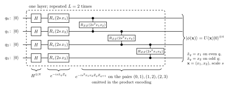
Figure 2. The encoding circuit \(U(\mathbf x)\) of Eq. (16) for \(N=4\), \(d=2\), as implemented in feature_circuit: Hadamard gates, \(R_z(2s\tilde x_q)\) with \(\tilde x_q=x_1\) on even and \(x_2\) on odd qubits, and \(R_{ZZ}(2s^2x_1x_2)\) on the pairs \((0,1),(1,2),(2,3)\), repeated \(L=2\) times. The product encoding is the same circuit without the \(R_{ZZ}\) gates. The inverse \(U^\dagger(\mathbf x')\) of the inversion test applies the same gates in reverse order with negated angles.
The implementation applies the gates one by one with apply_gate on the rank-\(N\) state tensor. The inverse circuit reverses the order of the gates and negates every angle, since \(R_z(\theta)^\dagger=R_z(-\theta)\), \(R_{ZZ}(\theta)^\dagger=R_{ZZ}(-\theta)\) and \(H^\dagger=H\).
Code
# ==============================================================================# STEP 6: the encoding circuit of Eq. (16) and its inverse# ==============================================================================def feature_circuit(psi, x, s, L=2, entangle=True, inverse=False):"""Apply U(x) of Eq. (16), or U(x)^dagger if `inverse`, to the N-qubit state tensor psi. MATH feature of qubit q: xt_q = x[q mod d]; one layer = H on all qubits, then Rz(2 s xt_q) on every qubit, then Rzz(2 s^2 xt_q xt_{q+1}) on the pairs (q, q+1), q = 0..N-2 (omitted if not `entangle`); L layers. Inverse: the same gates in reverse order with negated angles. COST L (2N + N - 1) gates of O(2^N) each. JAX N, d (shapes), L, entangle and inverse are static; x and s are traced, so the function can be vmapped over data points and differentiated with respect to s. """ N, d = psi.ndim, x.shape[0] xt = [x[q % d] for q inrange(N)]def layer(psi):for q inrange(N): psi = apply_gate(psi, H, [q])for q inrange(N): psi = apply_gate(psi, rz(2* s * xt[q]), [q])if entangle:for q inrange(N -1): psi = apply_gate(psi, rzz(2* s * s * xt[q] * xt[q +1]), [q, q +1])return psidef layer_dagger(psi):if entangle:for q inreversed(range(N -1)): psi = apply_gate(psi, rzz(-2* s * s * xt[q] * xt[q +1]), [q, q +1])for q inreversed(range(N)): psi = apply_gate(psi, rz(-2* s * xt[q]), [q])for q inreversed(range(N)): psi = apply_gate(psi, H, [q])return psifor _ inrange(L): psi = layer_dagger(psi) if inverse else layer(psi)return psi@partial(jax.jit, static_argnames=("N", "L", "entangle"))def feature_states(X, s, N, L=2, entangle=True):"""Encoded states of all rows of X as flat vectors: (n_points, 2^N). jax.vmap over the data points."""return jax.vmap(lambda x: feature_circuit(zero_state(N), x, s, L, entangle).reshape(-1))(X)x_a, x_b = X2[0], X2[150]psi_a = feature_circuit(zero_state(4), x_a, 1.0)back = feature_circuit(psi_a, x_a, 1.0, inverse=True)err_inv = max_abs(back - zero_state(4))print(f"N = 4: norm of U(x)|0> = {float(jnp.linalg.norm(psi_a)):.15f}; max |U(x)^dag U(x)|0> - |0>| = {err_inv:.1e}")assert err_inv < TOL
N = 4: norm of U(x)|0> = 0.999999999999999; max |U(x)^dag U(x)|0> - |0>| = 1.1e-15
The circuit preserves the norm and its inverse undoes it to round-off, the first check of any circuit implementation.
4.2 Properties of the fidelity kernel
The fidelity kernel of Eq. (5) has three properties that follow from its definition: \(k(\mathbf x,\mathbf x)=1\) because the states are normalised, \(0\leq k\leq1\) by the Cauchy–Schwarz inequality, and \(k(\mathbf x,\mathbf x')=k(\mathbf x',\mathbf x)\) because \(\vert\langle a\vert b\rangle\vert=\vert\langle b\vert a\rangle\vert\). It is also positive semidefinite. Write \(G_{ij}=\langle\phi_i\vert\phi_j\rangle\) for the matrix of overlaps (the Gram matrix), so that \(K_{ij}=G_{ij}\,\overline{G_{ij}}\) is the entry-wise product of \(G\) and its complex conjugate, two PSD matrices. The Schur product theorem states that such a product is PSD; here the proof takes one line, because for real \(c_i\)
where \(\vert\bar\phi\rangle\) has the complex-conjugate amplitudes. The fidelity kernel is therefore the ordinary scalar product of the feature vectors \(\vert\phi\rangle\otimes\vert\bar\phi\rangle\), equivalently of the density matrices, \(k(\mathbf x,\mathbf x')=\mathrm{Tr}\big[\rho(\mathbf x)\rho(\mathbf x')\big]\) with \(\rho=\vert\phi\rangle\langle\phi\vert\). The modulus \(\vert\langle\phi\vert\phi'\rangle\vert\) without the square has no such representation, and the cell shows that it is not PSD on our data.
The cell computes the kernel matrix of the two-ring set for \(N=6\) and \(s=1\) in two ways. The device way runs the inversion test, the circuit \(U^\dagger(\mathbf x')U(\mathbf x)\) on \(\vert0\rangle\), for every pair and reads the probability of \(0\cdots0\) from the final state; a double vmap evaluates the \(100\times100\) circuits for every second point in one call. The simulator way prepares the \(M\) states once and forms all overlaps by one matrix product, \(K=\vert\Phi^*\Phi^{\rm T}\vert^2\) with the states as rows of \(\Phi\), which costs \(M\) circuits instead of \(M^2\). This shortcut is not available on hardware, where amplitudes cannot be read out, and is used for the rest of the notebook once the two agree.
Code
# ==============================================================================# STEP 7: the kernel matrix by the inversion test (vmap over pairs) and by the state shortcut# ==============================================================================@partial(jax.jit, static_argnames=("N", "L", "entangle"))def inversion_test_p0(XA, XB, s, N, L=2, entangle=True):"""P(0...0) after U(x')^dag U(x)|0> for all pairs (x in XA, x' in XB): the kernel of Eq. (5), shape (|XA|, |XB|). JAX nested jax.vmap: the inner one over x' in XB, the outer one over x in XA. COST |XA| |XB| circuits of 2 L (3N - 1) gates. """def p0(x, xp): psi = feature_circuit(zero_state(N), x, s, L, entangle) psi = feature_circuit(psi, xp, s, L, entangle, inverse=True)return jnp.abs(psi[(0,) * N]) **2return jax.vmap(lambda x: jax.vmap(lambda xp: p0(x, xp))(XB))(XA)def kernel_from_states(A, B):"""Fidelity kernel from flat state vectors (rows): K_ij = |<a_i|b_j>|^2 = |(A^* B^T)_ij|^2."""return jnp.abs(jnp.conj(A) @ B.T) **2def quantum_kernel(XA, XB, s, N, L=2, entangle=True):"""Fidelity kernel matrix between the rows of XA and XB from M_A + M_B prepared states."""return kernel_from_states(feature_states(XA, s, N, L, entangle), feature_states(XB, s, N, L, entangle))N_MAIN, S_MAIN =6, 1.0t0 = time.perf_counter()X_sub = X2[::2] # every second point: 100 x 100 pairsK_device = jax.block_until_ready(inversion_test_p0(X_sub, X_sub, S_MAIN, N_MAIN))t_device = time.perf_counter() - t0t0 = time.perf_counter()K_sim = jax.block_until_ready(quantum_kernel(X2, X2, S_MAIN, N_MAIN))t_sim = time.perf_counter() - t0err_k = max_abs(K_device - K_sim[::2, ::2])print(f"N = {N_MAIN}, s = {S_MAIN}: {X_sub.shape[0] **2} inversion-test circuits in {t_device:.2f} s, "f"{X2.shape[0]} states in {t_sim:.2f} s (both including compilation)")print(f"max |K_inversion - K_states| = {err_k:.1e}")print(f"diagonal: max |K_ii - 1| = {max_abs(jnp.diag(K_sim) -1):.1e}; symmetry: max |K - K^T| = {max_abs(K_sim - K_sim.T):.1e};"f" range of entries [{float(K_sim.min()):.2e}, {float(K_sim.max()):.3f}]")lam_fid = np.linalg.eigvalsh(np.asarray(K_sim))G_abs = jnp.abs(jnp.conj(feature_states(X2, S_MAIN, N_MAIN)) @ feature_states(X2, S_MAIN, N_MAIN).T)lam_abs = np.linalg.eigvalsh(np.asarray(G_abs))print(f"fidelity kernel |<phi|phi'>|^2: smallest eigenvalue {lam_fid[0]:+.1e}")print(f"modulus |<phi|phi'>| (wrong control): smallest eigenvalue {lam_abs[0]:+.3f}, "f"{int(np.sum(lam_abs <-1e-8))} negative eigenvalues of {len(lam_abs)}")assert err_k < TOL and max_abs(jnp.diag(K_sim) -1) < TOL and max_abs(K_sim - K_sim.T) < TOLassert lam_fid[0] >-TOL *1e3and lam_abs[0] <-0.05
N = 6, s = 1.0: 10000 inversion-test circuits in 0.52 s, 200 states in 0.31 s (both including compilation)
max |K_inversion - K_states| = 2.7e-15
diagonal: max |K_ii - 1| = 8.4e-15; symmetry: max |K - K^T| = 0.0e+00; range of entries [4.87e-06, 1.000]
The inversion test and the state shortcut give the same matrix to round-off. The fidelity kernel has unit diagonal, is symmetric and has no negative eigenvalue beyond round-off, as Eq. (17) requires. The modulus of the overlap, the square root of every entry, has many negative eigenvalues, so it is not a valid kernel even though each of its entries measures the similarity of two states.
4.3 The product encoding in closed form
Without the \(R_{ZZ}\) gates the state is a product of single-qubit states, the overlap is a product of single-qubit overlaps, and the kernel factorises,
where \(\kappa\) is the fidelity kernel of the one-qubit circuit. For \(d=2\) and even \(N\) this is \(\big[\kappa(x_1,x_1')\,\kappa(x_2,x_2')\big]^{N/2}\): adding qubits raises the kernel to a higher power. For a single layer, \(L=1\), the one-qubit state is \(R_z(2s x)H\vert0\rangle=\big(e^{-isx}\vert0\rangle+e^{isx}\vert1\rangle\big)/\sqrt2\), its overlap with the state for \(x'\) is \(\big(e^{is(x-x')}+e^{-is(x-x')}\big)/2=\cos s(x-x')\), and
using \(\ln\cos^2u=-u^2-u^4/6-\dots\) for small \(u\), and, in the last step, that each of the \(d\) features appears on \(N/d\) qubits (\(N\) a multiple of \(d\)). The one-layer product encoding is therefore close to a Gaussian kernel with bandwidth \(\gamma_{\rm eff}=Ns^2/d\). This identifies the role of the two encoding parameters: increasing \(N\) at fixed \(s\) narrows the kernel as increasing \(\gamma\) does, and keeping \(Ns^2\) fixed keeps the kernel approximately unchanged, exactly in the Gaussian limit. Shaydulin and Wild (2022) identified the data scale as the bandwidth of quantum kernels and showed, on several kernels and data sets, that it moves the model between underfitting and overfitting and that optimising it counteracts the decay of kernel values with the number of qubits. The cell checks Eq. (18) and the first equality of Eq. (19) exactly, and the Gaussian approximation for a small scale.
L = 2 product encoding: max |k(N=6) - k(N=2)^3| = 6.1e-15 (Eq. 18)
L = 1, N = 6, s = 1.0: max |k - prod cos^2| = 4.0e-15; max |k - exp(-N s^2 |dx|^2 / 2)| = 0.032
L = 1, N = 6, s = 0.1: max |k - prod cos^2| = 4.9e-15; max |k - exp(-N s^2 |dx|^2 / 2)| = 0.001
The product kernel at \(N=6\) is the cube of the kernel at \(N=2\), and the one-layer product kernel equals the product of \(\cos^2\) factors to round-off. The Gaussian approximation needs \(s\vert\tilde x_q-\tilde x_q'\vert\ll1\); with coordinate differences up to about 2 it deviates by up to \(0.032\) at \(s=1\) and by \(0.001\) at \(s=0.1\). The entangling gates spoil the factorisation, and no closed form of this kind is available for the circuit of Eq. (16).
4.4 Measuring the kernel: inversion test and swap test
On a device the kernel is a probability and is estimated from \(S\) shots. In the inversion test each shot is a Bernoulli trial with success probability \(k\) (outcome \(0\cdots0\)), so the number of successes is binomially distributed and the estimate \(\hat k=n_0/S\) has
The swap test needs both states at once. An ancilla qubit in \(\vert0\rangle\) is put into \((\vert0\rangle+\vert1\rangle)/\sqrt2\) by a Hadamard gate, controls a swap of the two \(N\)-qubit registers \(\vert a\rangle=\vert\phi(\mathbf x)\rangle\) and \(\vert b\rangle=\vert\phi(\mathbf x')\rangle\) (one controlled-SWAP gate per qubit pair), and receives a second Hadamard gate. The state before the measurement of the ancilla is
and the probability of ancilla \(0\) is \(\frac14\big\Vert\vert a\rangle\vert b\rangle+\vert b\rangle\vert a\rangle\big\Vert^2=\frac14\big(2+2\vert\langle a\vert b\rangle\vert^2\big)\),
The swap test needs \(2N+1\) qubits and \(N\) three-qubit gates, but it does not run the inverse circuit \(U^\dagger\), and it works for states that come from an unknown source. For small kernel values its variance \(1/S\) is much larger than the \(k/S\) of the inversion test, so the inversion test is the better choice when \(U\) is known. The cell implements the swap test for \(N=3\) and \(N=4\) (seven and nine qubits) and checks Eq. (22) to round-off. It then samples 4000 bit strings of the inversion-test circuit with the engine’s sampler and compares the fraction of \(0\cdots0\) with the binomial statistics of Eq. (20); Section 9 draws the binomial counts directly instead of bit strings.
Code
# ==============================================================================# STEP 9: the swap test on 2N+1 qubits, and the inversion test sampled shot by shot# ==============================================================================CSWAP = jnp.zeros((8, 8), dtype=CDTYPE).at[:4, :4].set(jnp.eye(4, dtype=CDTYPE)).at[4:, 4:].set(SWAP)def swap_test_p0(a, b):"""Probability of ancilla outcome 0 in the swap test of two N-qubit states a, b (tensors), Eq. (22). Register: axis 0 = ancilla, axes 1..N = copy of a, axes N+1..2N = copy of b (2N + 1 qubits). Circuit: H(anc); CSWAP(anc, 1+q, 1+N+q) for q = 0..N-1; H(anc). Returns sum over the rest of |psi[0, ...]|^2. """ N = a.ndim psi = jnp.zeros((2,) * (2* N +1), dtype=CDTYPE).at[0].set(jnp.tensordot(a, b, axes=0)) psi = apply_gate(psi, H, [0])for q inrange(N): psi = apply_gate(psi, CSWAP, [0, 1+ q, 1+ N + q]) psi = apply_gate(psi, H, [0])return jnp.sum(jnp.abs(psi[0]) **2)for N_sw in (3, 4): pairs = [(0, 1), (0, 150), (40, 199)] errs = []for i, j in pairs: a = feature_circuit(zero_state(N_sw), X2[i], S_MAIN) b = feature_circuit(zero_state(N_sw), X2[j], S_MAIN) k_ij =float(jnp.abs(jnp.vdot(b, a)) **2) errs.append(abs(float(swap_test_p0(a, b)) - (1+ k_ij) /2))print(f"swap test on {2* N_sw +1} qubits: max |P(0) - (1 + k)/2| over {len(pairs)} pairs = {max(errs):.1e}")assertmax(errs) < TOLi, j, SHOTS_CHECK =0, 150, 4000psi_ij = feature_circuit(feature_circuit(zero_state(N_MAIN), X2[i], S_MAIN), X2[j], S_MAIN, inverse=True)bits = np.asarray(sample_bitstrings(jax.random.PRNGKey(5), psi_ij, SHOTS_CHECK))k_hat =float(np.mean(np.all(bits ==0, axis=1)))k_true =float(K_sim[i, j])sd_inv = np.sqrt(k_true * (1- k_true) / SHOTS_CHECK)print(f"inversion test, pair ({i},{j}), N = {N_MAIN}: k = {k_true:.4f}, estimate from {SHOTS_CHECK} shots = {k_hat:.4f}, "f"deviation = {(k_hat - k_true) / sd_inv:+.2f} standard deviations of Eq. (20)")print(f"standard deviation per {SHOTS_CHECK} shots: inversion test {sd_inv:.4f}, swap test {np.sqrt((1- k_true **2) / SHOTS_CHECK):.4f}")assertabs(k_hat - k_true) <4* sd_inv
swap test on 7 qubits: max |P(0) - (1 + k)/2| over 3 pairs = 2.2e-15
swap test on 9 qubits: max |P(0) - (1 + k)/2| over 3 pairs = 1.9e-15
inversion test, pair (0,150), N = 6: k = 0.1595, estimate from 4000 shots = 0.1688, deviation = +1.60 standard deviations of Eq. (20)
standard deviation per 4000 shots: inversion test 0.0058, swap test 0.0156
The swap test reproduces \((1+k)/2\) to round-off on seven and nine qubits, and the sampled inversion test agrees with the exact kernel within \(1.6\) binomial standard deviations. For this pair, with \(k=0.16\), the standard deviation of the swap-test estimate is \(2.7\) times larger, so it needs \((1+k)/k\approx7\) times as many shots for the same precision.
Code
section_timer("5 classification at N = 6")
5. Classifying the rings with a six-qubit kernel
This section uses the entangling encoding with \(N=6\), \(L=2\) and \(s=1\), and the training and test sets of the first split. Section 7 shows that \(s=1\) lies in the range of scales that work well.
5.1 Kernel matrices sorted by class
When the training points are ordered by class, the kernel matrix splits into blocks: the diagonal blocks contain the similarities within a class, the off-diagonal blocks those between classes. A kernel suited to the data has larger entries in the diagonal blocks.
Code
# ==============================================================================# STEP 10: kernel matrices of the training sets, sorted by class# ==============================================================================MAIN = {}for name, d in DATA.items(): tr, te = d["train"][0], d["test"][0] order = tr[np.argsort(d["y"][tr], kind="stable")] # training points sorted by class MAIN[name] =dict(order=order, test=te, K=np.asarray(quantum_kernel(d["X"][order], d["X"][order], S_MAIN, N_MAIN)))fig, axes = plt.subplots(1, 2, figsize=(10.0, 4.4))for ax, (name, m) inzip(axes, MAIN.items()): d = DATA[name] im = ax.imshow(m["K"], cmap="magma", vmin=0, vmax=1) ax.grid(False) counts = np.bincount(d["y"][m["order"]])for edge in np.cumsum(counts)[:-1]: ax.axhline(edge -0.5, color="w", lw=0.8) ax.axvline(edge -0.5, color="w", lw=0.8) ax.set_title(f"{name}: $K_{{ij}}$, $N={N_MAIN}$, $s={S_MAIN}$") ax.set_xlabel("training point $j$ (sorted by class)") ax.set_ylabel("training point $i$") fig.colorbar(im, ax=ax, fraction=0.046) yo = d["y"][m["order"]]print(f"{name}: mean kernel value in block (class a, class b)")for a inrange(d["n_classes"]): row = []for c inrange(d["n_classes"]): B = m["K"][np.ix_(yo == a, yo == c)]if a == c: B = B[~np.eye(B.shape[0], dtype=bool)] # exclude the unit diagonal row.append(f"{B.mean():.3f}")print(f" class {a}: "+" ".join(row))fig.tight_layout()plt.show()
two rings: mean kernel value in block (class a, class b)
class 0: 0.625 0.156
class 1: 0.156 0.184
three rings: mean kernel value in block (class a, class b)
class 0: 0.774 0.370 0.092
class 1: 0.370 0.362 0.169
class 2: 0.092 0.169 0.181
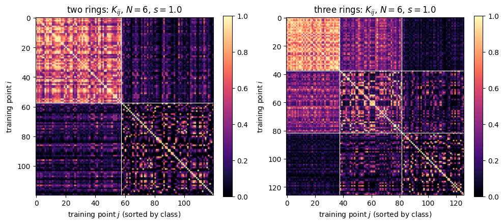
The block structure is visible, but the blocks are far from orthogonal. Points of the inner ring are similar to each other (mean kernel value \(0.625\)), points of the outer ring much less so (\(0.184\)), and the mean similarity between an inner and an outer point, \(0.156\), is only slightly lower than within the outer ring. The three-ring set shows the same pattern, with diagonal blocks \(0.774\), \(0.362\), \(0.181\) from the inside out. The asymmetry between the rings has a simple origin: near the origin all angles of Eq. (16) are small and all states are close to \(U(\mathbf 0)\vert0\rangle\), while on the outer ring the angles vary over a range of about \(\pm2.4\) rad and two points of the same ring can be far apart in Hilbert space. The kernel measures distances between states, which only partly follow the labels, and the SVM has to make use of the differences that remain.
5.2 Kernel principal component analysis
The feature vectors live in a space of dimension \(2^{2N}\) (Eq. (17)), but only their projections onto a few directions can be drawn. Principal component analysis (PCA) chooses the directions of largest variance, and kernel PCA (Schölkopf, Smola and Müller, 1998) does so using only the kernel matrix. The data are first centred in feature space, \(\tilde{\boldsymbol\phi}_i=\boldsymbol\phi_i-\frac1M\sum_j\boldsymbol\phi_j\), which changes the kernel matrix to
A principal direction \(\mathbf u\) of the covariance \(\frac1M\sum_i\tilde{\boldsymbol\phi}_i\tilde{\boldsymbol\phi}_i^{\rm T}\) lies in the span of the data, \(\mathbf u=\sum_ia_i\tilde{\boldsymbol\phi}_i\). Inserting this into the eigenvalue equation and taking scalar products with \(\tilde{\boldsymbol\phi}_j\) gives \(\tilde K^2\mathbf a=M\lambda\,\tilde K\mathbf a\), which is solved by \(\tilde K\mathbf a=M\lambda\,\mathbf a\) (components of \(\mathbf a\) in the null space of \(\tilde K\) do not change \(\mathbf u\)), so the eigenvectors \(\mathbf v_k\) of \(\tilde K\), with eigenvalues \(\tilde\lambda_k\), give the directions. The normalisation \(\vert\mathbf u\vert^2=\mathbf a^{\rm T}\tilde K\mathbf a=1\) fixes \(\mathbf a=\mathbf v_k/\sqrt{\tilde\lambda_k}\), and the coordinate of point \(j\) along \(\mathbf u_k\) is
The fraction \(\tilde\lambda_k/\sum_l\tilde\lambda_l\) is the share of the total variance carried by component \(k\). The cell projects the training sets onto the first three components and asks whether the classes can be separated by a plane in these three coordinates, by training a linear SVM on them and recording its training accuracy.
Code
# ==============================================================================# STEP 11: kernel PCA, Eqs. (23)-(24), and linear separability of the first three components# ==============================================================================def kernel_pca(K, n_components=3):"""Coordinates z_jk = sqrt(lambda_k) v_jk of the centred kernel J K J (Eq. 24) and the variance fractions.""" M = K.shape[0] J = np.eye(M) - np.ones((M, M)) / M lam, V = np.linalg.eigh(J @ K @ J) lam, V = lam[::-1], V[:, ::-1] # descending Z = V[:, :n_components] * np.sqrt(np.maximum(lam[:n_components], 0.0))return Z, lam / lam.sum()fig = plt.figure(figsize=(10.0, 4.6))for p, (name, m) inenumerate(MAIN.items()): d = DATA[name] yo = d["y"][m["order"]] Z, frac = kernel_pca(m["K"])# check of Eq. (24): the scalar products of the projections reproduce the centred kernel along the components Zall, _ = kernel_pca(m["K"], n_components=len(yo)) Mtr =len(yo) Jm = np.eye(Mtr) -1.0/ Mtr err_pca = np.max(np.abs(Zall @ Zall.T - Jm @ m["K"] @ Jm)) K_lin = Z @ Z.T acc_sep, _ = fit_and_score(K_lin, yo, np.arange(Mtr)[None], np.arange(Mtr)[None], d["n_classes"], C=1e3, n_iter=4000)print(f"{name}: variance fractions of the first five components {np.round(frac[:5], 3)}; "f"max |Z Z^T - JKJ| = {err_pca:.1e}; linear SVM on 3 components: training accuracy {100* acc_sep[0]:.1f} %")assert err_pca < TOL *1e3 m["acc_sep"] = acc_sep[0] ax = fig.add_subplot(1, 2, p +1, projection="3d")for c inrange(d["n_classes"]): ax.scatter(Z[yo == c, 0], Z[yo == c, 1], Z[yo == c, 2], s=10, color=CLASS_COLORS[c], label=f"class {c}") ax.set_xlabel("$z_1$") ax.set_ylabel("$z_2$") ax.set_zlabel("$z_3$") ax.set_title(f"{name}: kernel PCA, {100* frac[:3].sum():.0f} % of the variance") ax.view_init(elev=22, azim=-60) ax.set_box_aspect(None, zoom=0.85) # keeps the z label inside the panel ax.legend(fontsize=8, loc="upper left")fig.subplots_adjust(left=0.0, right=0.97, bottom=0.02, top=0.93, wspace=0.05)plt.show()
two rings: variance fractions of the first five components [0.202 0.137 0.113 0.08 0.078]; max |Z Z^T - JKJ| = 2.6e-15; linear SVM on 3 components: training accuracy 100.0 %
three rings: variance fractions of the first five components [0.196 0.152 0.111 0.082 0.061]; max |Z Z^T - JKJ| = 3.1e-15; linear SVM on 3 components: training accuracy 96.0 %
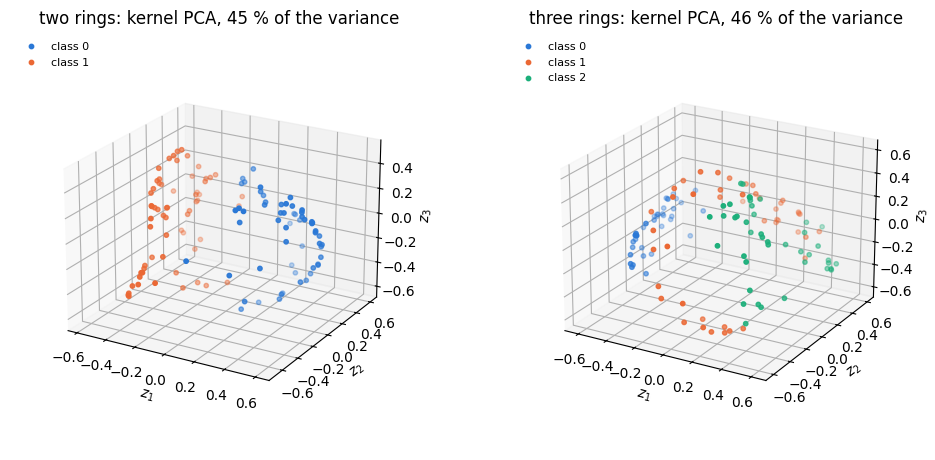
The projections reproduce the centred kernel matrix to round-off when all components are kept, which checks Eq. (24). The first three components carry \(45\,\%\) of the variance for the two-ring set and \(46\,\%\) for the three-ring set, so the encoded data are not confined to a few directions. In the projection the two rings form two curved bands on opposite sides of the cloud, and a plane in the three coordinates separates all training points of the two-ring set. The three rings overlap partly in this view, and the one-versus-rest planes classify \(96\,\%\) of their training points correctly. The SVM is not restricted to three components and uses the full kernel.
5.3 Decision boundaries and accuracies
The SVM is trained on the full kernel matrix of the training set (4000 iterations), and the decision function of Eq. (12) is evaluated on a \(60\times60\) grid of the plane, which needs the kernel between every grid point and every training point.
two rings: training accuracy 100.0 %, test accuracy 100.0 % (80 test points); support vectors per SVM [20] of 120
three rings: training accuracy 100.0 %, test accuracy 100.0 % (84 test points); support vectors per SVM [11, 33, 21] of 126
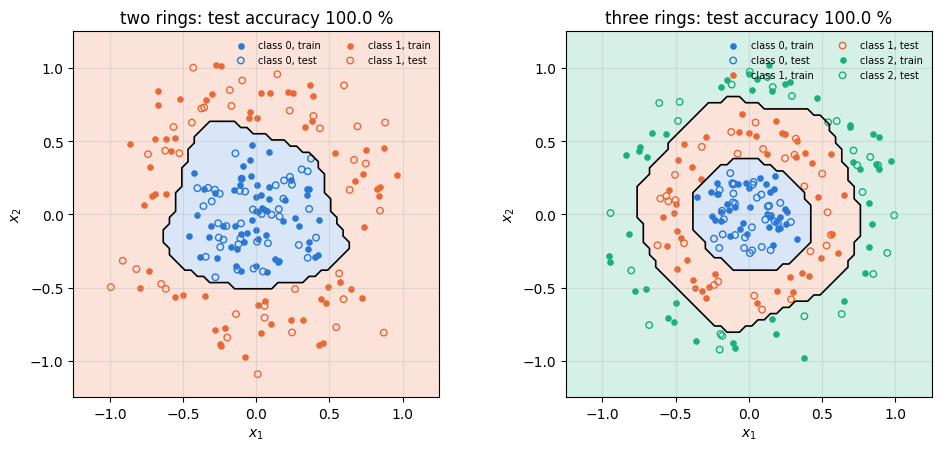
The decision boundaries are closed curves around the origin, close to the circles that separate the rings; their jagged edges come from the \(60\times60\) evaluation grid. On this split every training and test point is classified correctly with both data sets. The two-ring SVM has 20 support vectors out of 120; the three one-versus-rest SVMs have 11, 33 and 21, the most for the middle ring, which has to be separated from neighbours on both sides.
Code
section_timer("6 comparison with classical kernels")
6. Comparison with classical kernels over random splits
One split is one sample; a fair comparison repeats the whole procedure over the ten splits and gives every kernel the same chance to adapt its bandwidth. Four kernels enter:
the linear kernel\(k=\mathbf x\cdot\mathbf x'\), which can only draw straight lines and serves as a control that must fail on the rings;
the Gaussian kernel\(e^{-\gamma\vert\mathbf x-\mathbf x'\vert^2}\) with \(\gamma\in\{0.3,1,3,10,30,100\}\);
the entangling and the product quantum kernels of Eq. (16) with \(N=6\), \(L=2\) and \(s\in\{0.25,0.5,1,1.5,2,3\}\).
For every split and every tunable kernel, tune_and_score fits each candidate bandwidth on two thirds of the training points, picks the one with the best accuracy on the remaining third, refits on the whole training set and scores the test set. The test points never influence the choice. As a second control, the labels of all points are shuffled at random, which destroys every relation between \(\mathbf x\) and \(y\); any method must then drop to the accuracy of guessing, \(1/n_{\rm c}\) on balanced classes.
Code
# ==============================================================================# STEP 13: test accuracies over 10 splits with tuned bandwidths; shuffled-label control# ==============================================================================GAMMAS = [0.3, 1.0, 3.0, 10.0, 30.0, 100.0]SCALES = [0.25, 0.5, 1.0, 1.5, 2.0, 3.0]COMPARE = {}t_cmp = time.perf_counter()for name, d in DATA.items(): X, y, nc, tr, te = d["X"], d["y"], d["n_classes"], d["train"], d["test"] res = {} acc, _ = fit_and_score(np.asarray(X @ X.T), y, tr, te, nc) res["linear"] = (acc, None) res["Gaussian"] = tune_and_score(np.stack([np.asarray(rbf_kernel(X, X, g)) for g in GAMMAS]), y, tr, te, nc) K_ent = np.stack([np.asarray(quantum_kernel(X, X, s, N_MAIN)) for s in SCALES]) K_pro = np.stack([np.asarray(quantum_kernel(X, X, s, N_MAIN, entangle=False)) for s in SCALES]) res["quantum, entangling"] = tune_and_score(K_ent, y, tr, te, nc) res["quantum, product"] = tune_and_score(K_pro, y, tr, te, nc) y_shuffled = np.asarray(jax.random.permutation(jax.random.PRNGKey(77), y)) res["shuffled labels (entangling)"] = tune_and_score(K_ent, y_shuffled, tr, te, nc) COMPARE[name] = resprint(f"{name} ({nc} classes, chance level {100/ nc:.1f} %): test accuracy, mean +- standard error over {N_SPLITS} splits")for model, (acc, best) in res.items(): mu, se = mean_and_se(acc) grid_vals = GAMMAS if model =="Gaussian"else SCALES chosen =""if best isNoneelse" chosen: "+", ".join(f"{v:g} x{int(np.sum(np.asarray(grid_vals)[best] == v))}"for v insorted(set(np.asarray(grid_vals)[best])))print(f" {model:29s}{100* mu:5.1f} +- {100* se:3.1f} %{chosen}")print(f"({time.perf_counter() - t_cmp:.1f} s for the whole comparison)")for name, res in COMPARE.items(): nc = DATA[name]["n_classes"]assert np.mean(res["linear"][0]) <0.75# a straight line cannot separate ringsassertabs(np.mean(res["shuffled labels (entangling)"][0]) -1/ nc) <0.12for model in ("Gaussian", "quantum, entangling", "quantum, product"):assert np.mean(res[model][0]) >0.9fig, axes = plt.subplots(1, 2, figsize=(10.0, 3.8))for ax, (name, res) inzip(axes, COMPARE.items()): labels_m =list(res) mus = [100* np.mean(res[m][0]) for m in labels_m] ses = [100* mean_and_se(res[m][0])[1] for m in labels_m] ax.barh(range(len(labels_m)), mus, xerr=ses, color=[PALETTE[5], PALETTE[3], PALETTE[0], PALETTE[2], "0.6"], capsize=3) ax.axvline(100/ DATA[name]["n_classes"], color="k", ls=":", lw=1, label="chance") ax.set_yticks(range(len(labels_m))) ax.set_yticklabels(labels_m, fontsize=8) ax.set_xlim(0, 100) ax.set_xlabel("test accuracy (%)") ax.set_title(f"{name}, {N_SPLITS} splits") ax.legend(fontsize=8, loc="lower right")fig.tight_layout()plt.show()
three rings (3 classes, chance level 33.3 %): test accuracy, mean +- standard error over 10 splits
linear 33.5 +- 1.9 %
Gaussian 98.1 +- 0.7 % chosen: 1 x3, 3 x3, 10 x1, 30 x2, 100 x1
quantum, entangling 98.5 +- 0.4 % chosen: 0.5 x8, 1 x2
quantum, product 98.5 +- 0.6 % chosen: 0.5 x5, 1 x5
shuffled labels (entangling) 32.6 +- 1.3 % chosen: 0.25 x3, 0.5 x1, 1 x1, 1.5 x3, 3 x2
(6.1 s for the whole comparison)
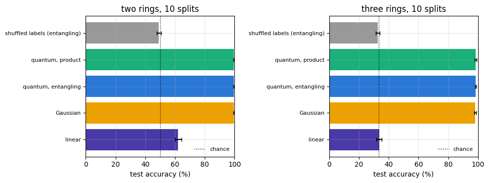
The two controls behave as they must: the linear kernel reaches \(62\,\%\) on two rings and \(34\,\%\) on three, close to the guessing levels of \(50\,\%\) and \(33\,\%\) (above \(50\,\%\) on two rings because a line can still cut off a part of the outer ring), and with shuffled labels the tuned quantum kernel falls to \(49\,\%\) and \(33\,\%\). The three non-linear kernels are statistically indistinguishable: \(99.6\pm0.3\,\%\) (Gaussian), \(99.5\pm0.3\,\%\) (entangling) and \(99.5\pm0.3\,\%\) (product) on two rings, \(98.1\pm0.7\,\%\), \(98.5\pm0.4\,\%\) and \(98.5\pm0.6\,\%\) on three. The ten splits draw from the same 200 or 210 points, so their accuracies are correlated and the standard error understates the uncertainty somewhat; the differences between the three kernels are smaller than one standard error even so. The few errors are test points in the narrow radial gaps of Section 3.1. On two rings the validation picks the smoothest candidate in most splits, \(\gamma=0.3\) and \(s=0.25\), because every smooth kernel already reaches \(100\,\%\) on the validation points; on three rings it prefers \(s=0.5\) to \(1\) and a wider range of \(\gamma\). On these data the entangling gates bring no measurable gain over the product encoding, and neither quantum kernel improves on a tuned Gaussian kernel.
Code
section_timer("7 effect of the encoding")
7. The effect of the encoding: scale, number of qubits and entangling gates
The tuned comparison hides how sensitive the quantum kernel is to its parameters. The first cell fixes \(N=6\) and scans the scale \(s\) for both encodings without tuning; the second scans \(N=2,4,\dots,10\) for the product encoding at \(s=1\) and for the entangling encoding at \(s=1\) and at \(s=\sqrt{6/N}\), which keeps \(Ns^2\), and with it the effective bandwidth of Eq. (19), at its value for \(N=6\), \(s=1\). Both cells use the two-ring set and the ten splits, and they also record the mean off-diagonal kernel value, which shows how far the kernel has moved towards the extremes \(0\) and \(1\).
Code
# ==============================================================================# STEP 14: test accuracy versus the data scale s (N = 6) and versus the number of qubits N# ==============================================================================d = DATA["two rings"]X, y, tr, te = d["X"], d["y"], d["train"], d["test"]off =~np.eye(X.shape[0], dtype=bool)S_SCAN = [0.25, 0.5, 1.0, 2.0, 3.0, 4.0, 6.0]scan_s = {}for ent in (True, False): rows = []for s in S_SCAN: Kq = np.asarray(quantum_kernel(X, X, s, N_MAIN, entangle=ent)) acc_te, acc_tr = fit_and_score(Kq, y, tr, te, 2) rows.append((*mean_and_se(acc_te), np.mean(acc_tr), Kq[off].mean())) scan_s[ent] = np.array(rows)N_SCAN = [2, 4, 6, 8, 10]scan_N = {}for ent, rule in ((True, "s = 1"), (True, "s = sqrt(6/N)"), (False, "s = 1")): rows = []for N in N_SCAN: s =1.0if rule =="s = 1"else np.sqrt(6.0/ N) Kq = np.asarray(quantum_kernel(X, X, s, N, entangle=ent)) acc_te, acc_tr = fit_and_score(Kq, y, tr, te, 2) rows.append((*mean_and_se(acc_te), np.mean(acc_tr), Kq[off].mean())) scan_N[(ent, rule)] = np.array(rows)print("N = 6, scan of s: "+" ".join(f"{s:>5g}"for s in S_SCAN))for ent in (True, False): lab ="entangling"if ent else"product"print(f" {lab:10s} test acc "+" ".join(f"{100* r[0]:5.1f}"for r in scan_s[ent]))print(f" {lab:10s} train acc "+" ".join(f"{100* r[2]:5.1f}"for r in scan_s[ent]))print(f" {lab:10s} mean K_ij "+" ".join(f"{r[3]:5.3f}"for r in scan_s[ent]))print("scan of N: "+" ".join(f"{N:>5d}"for N in N_SCAN))for (ent, rule), rows in scan_N.items(): lab = ("entangling"if ent else"product") +", "+ ruleprint(f" {lab:26s} test acc "+" ".join(f"{100* r[0]:5.1f}"for r in rows))print(f" {lab:26s} mean K_ij"+" ".join(f"{r[3]:6.3f}"for r in rows))fig, (ax1, ax2) = plt.subplots(1, 2, figsize=(10.5, 4.0))for k, ent inenumerate((True, False)): lab ="entangling"if ent else"product" r = scan_s[ent] ax1.errorbar(S_SCAN, 100* r[:, 0], yerr=100* r[:, 1], marker=MARKERS[k], color=PALETTE[2* k], capsize=3, label=f"{lab}, test") ax1.plot(S_SCAN, 100* r[:, 2], ls="--", marker=MARKERS[k], mfc="none", color=PALETTE[2* k], label=f"{lab}, train")ax1.set_xscale("log")ax1.set_xticks(S_SCAN)ax1.set_xticklabels([f"{v:g}"for v in S_SCAN])ax1.minorticks_off()ax1.set_xlabel("data scale $s$")ax1.set_ylabel("accuracy (%)")ax1.set_title(f"two rings, $N={N_MAIN}$, $L=2$")ax1.legend(fontsize=8)for k, ((ent, rule), rows) inenumerate(scan_N.items()): lab = ("entangling"if ent else"product") + (", $s=1$"if rule =="s = 1"elser", $s=\sqrt{6/N}$") ax2.errorbar(N_SCAN, 100* rows[:, 0], yerr=100* rows[:, 1], marker=MARKERS[k], color=PALETTE[k], capsize=3, ls="-"if ent else"--", label=lab)ax2.set_xlabel("number of qubits $N$")ax2.set_ylabel("test accuracy (%)")ax2.set_title("two rings, $L=2$")ax2.legend(fontsize=8)fig.tight_layout()plt.show()
N = 6, scan of s: 0.25 0.5 1 2 3 4 6
entangling test acc 99.5 100.0 99.9 98.5 87.1 72.9 61.8
entangling train acc 99.8 100.0 100.0 99.8 99.4 99.6 99.0
entangling mean K_ij 0.870 0.629 0.279 0.094 0.066 0.050 0.045
product test acc 99.4 100.0 100.0 98.8 61.0 49.0 52.8
product train acc 99.7 100.0 100.0 99.8 84.7 77.0 79.5
product mean K_ij 0.871 0.640 0.344 0.155 0.167 0.152 0.157
scan of N: 2 4 6 8 10
entangling, s = 1 test acc 99.4 99.9 99.9 99.9 99.9
entangling, s = 1 mean K_ij 0.594 0.385 0.279 0.217 0.177
entangling, s = sqrt(6/N) test acc 95.1 100.0 99.9 99.9 99.9
entangling, s = sqrt(6/N) mean K_ij 0.382 0.287 0.279 0.277 0.276
product, s = 1 test acc 100.0 100.0 100.0 100.0 100.0
product, s = 1 mean K_ij 0.646 0.456 0.344 0.272 0.224
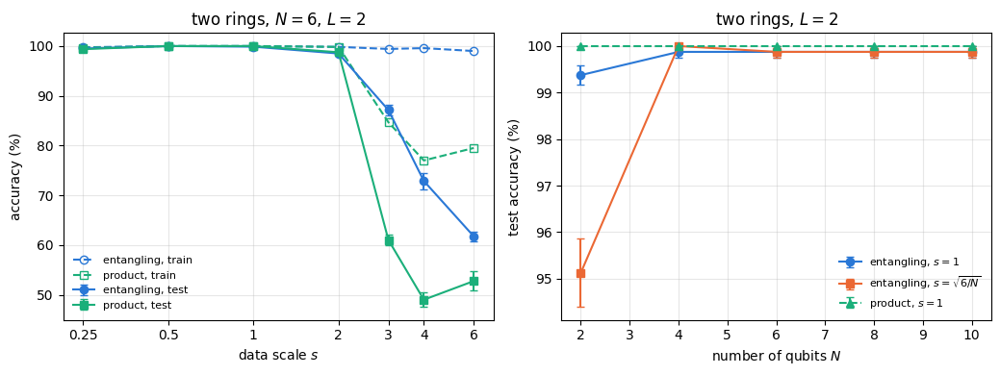
Small and moderate scales, \(0.25\leq s\leq2\), give test accuracies between \(98.5\,\%\) and \(100\,\%\) for both encodings. Beyond \(s=2\) they fail in two different ways. For the entangling encoding the training accuracy stays at \(99\,\%\) or more while the test accuracy drops to \(87\,\%\), \(73\,\%\) and \(62\,\%\) at \(s=3,4,6\); the mean off-diagonal kernel value falls to \(0.05\), the kernel matrix approaches the identity, every point is similar only to itself, and the SVM memorises the training set, which is overfitting. For the product encoding the training accuracy also falls, to \(77\)–\(85\,\%\), and the test accuracy drops to \(61\,\%\) at \(s=3\) and to the guessing level at \(s=4\) and \(6\). The single-qubit kernels are periodic in the coordinates with period \(\pi/s\), for any number of layers, because \(R_z(\theta+2\pi)=-R_z(\theta)\) changes only the global phase; at large \(s\) points far apart look similar, and the kernel no longer reflects the geometry of the data, which is underfitting. The mean kernel value of the product encoding stays near \(0.15\) and does not reveal this. The Gaussian picture of Eq. (19) fails in this regime, since it requires \(s\vert\tilde x_q-\tilde x_q'\vert\ll1\). At the other end, \(s\to0\), every kernel tends to the constant \(1\) and every point looks like every other.
Against \(N\) the picture is flat on this data set: at \(s=1\) the test accuracy is \(99.4\,\%\) for \(N=2\) and \(99.9\,\%\) for \(N=4\) to \(10\) with the entangling encoding, and \(100\,\%\) for every \(N\) with the product encoding, while the mean kernel value decreases from \(0.59\) to \(0.18\) (entangling) and from \(0.65\) to \(0.22\) (product). The rule \(s=\sqrt{6/N}\) keeps the mean kernel value of the entangling encoding constant, \(0.28\), from \(N=4\) to \(N=10\), as Eq. (19) suggests although it was derived for the product encoding with one layer. At \(N=2\) it requires \(s=\sqrt3\), and the test accuracy drops to \(95\,\%\). More qubits add no information here, because the data have two features whatever \(N\) is.
Code
section_timer("8 concentration")
8. Concentration of kernel values with the number of qubits
For a kernel to be useful its off-diagonal values must vary from pair to pair, and on a device these variations must be larger than the shot noise. A reference point is the overlap of two independent Haar-random states in dimension \(D=2^N\). The amplitudes of a Haar-random state are independent complex Gaussian numbers \(g_n\) divided by their norm, so \(p=\vert\langle a\vert b\rangle\vert^2\) has the distribution of \(\vert g_1\vert^2/\sum_n\vert g_n\vert^2\), where the \(\vert g_n\vert^2\) are independent exponential random numbers. This ratio has the Beta distribution with parameters \((1,D-1)\), whose first two moments are \(\mathbb E\,p=1/D\) and \(\mathbb E\,p^2=2/\big(D(D+1)\big)\), so
Both mean and spread vanish exponentially. The number of shots needed to see the differences between kernel values follows from a comparison of two variances. The shot noise of one entry, Eq. (20), has variance \(k(1-k)/S\); with \(k\) replaced by its mean, it is smaller than the spread of the kernel values across pairs, \(\mathrm{Var}\,k\), once
where the last value follows from Eq. (25). An encoding whose states look Haar-random needs a number of shots per kernel entry that doubles with every qubit. Thanasilp et al. (2024) proved bounds of this type for expressive encodings, global measurements, entanglement and noise.
The cell measures \(\mathbb E\,k\), \(\mathrm{Var}\,k\) and \(S^*\) over all pairs of 200 points in four settings. The two-ring data, which have two features repeated over the qubits, are encoded with the entangling circuit at \(s=1\) and at \(s=\sqrt{6/N}\) for even \(N=2,\dots,10\). Random data with one feature per qubit, \(x_q\) uniform in \([-1,1]\), are encoded for \(N=2,\dots,10\) at \(s=\pi/2\), so that every single-qubit angle \(2sx_q\) ranges over a full period, once with the entangling and once with the product circuit; the product kernel is evaluated through Eq. (18) as a product of \(N\) one-qubit kernels, which needs a single compiled circuit for all \(N\) and is checked against the six-qubit circuit. The Haar values of Eq. (25) are checked against 200 sampled Haar states at \(N=6\).
Code
# ==============================================================================# STEP 15: mean, variance and S* of off-diagonal kernel values for N = 2..10# ==============================================================================N_CONC =list(range(2, 11))N_PTS_CONC =200iu = np.triu_indices(N_PTS_CONC, 1)def offdiag_stats(K):"""Mean, variance and S* = mean (1 - mean) / variance of the upper off-diagonal entries (Eq. 26).""" v = np.asarray(K)[iu] m, var = v.mean(), v.var()return m, var, m * (1- m) / varX_rings = DATA["two rings"]["X"]conc = {} # setting -> (list of N, list of statistics)for N in N_CONC: X_rand =2* jax.random.uniform(jax.random.PRNGKey(300+ N), (N_PTS_CONC, N), dtype=RDTYPE) -1 settings = {"random x in [-1,1]^N, entangling, s = pi/2":lambda: quantum_kernel(X_rand, X_rand, np.pi /2, N),# product encoding: Eq. (18), one single-qubit kernel per feature (one compilation for all N)"random x in [-1,1]^N, product, s = pi/2":lambda: np.prod([np.asarray(quantum_kernel(X_rand[:, q:q +1], X_rand[:, q:q +1], np.pi /2, 1, entangle=False)) for q inrange(N)], axis=0)}if N %2==0: # the two-feature ring data on an even number of qubits settings["rings, entangling, s = 1"] =lambda: quantum_kernel(X_rings, X_rings, 1.0, N) settings["rings, entangling, s = sqrt(6/N)"] =lambda: quantum_kernel(X_rings, X_rings, np.sqrt(6.0/ N), N)for lab, make_K in settings.items(): Ns, stats = conc.setdefault(lab, ([], [])) Ns.append(N) stats.append(offdiag_stats(make_K()))conc = {k: (np.array(Ns), np.array(v)) for k, (Ns, v) in conc.items()}conc = {k: conc[k] for k in ("rings, entangling, s = 1", "rings, entangling, s = sqrt(6/N)","random x in [-1,1]^N, entangling, s = pi/2", "random x in [-1,1]^N, product, s = pi/2")}X_check =2* jax.random.uniform(jax.random.PRNGKey(306), (N_PTS_CONC, 6), dtype=RDTYPE) -1err_eq18 = max_abs(quantum_kernel(X_check, X_check, np.pi /2, 6, entangle=False) - np.prod( [np.asarray(quantum_kernel(X_check[:, q:q +1], X_check[:, q:q +1], np.pi /2, 1, entangle=False))for q inrange(6)], axis=0))print(f"product kernel from single-qubit kernels, Eq. (18), N = 6: max deviation from the circuit {err_eq18:.1e}")assert err_eq18 < TOLD6 =2**6haar = jax.vmap(lambda k: haar_state(k, 6).reshape(-1))(jax.random.split(jax.random.PRNGKey(9), N_PTS_CONC))m_h, v_h, S_h = offdiag_stats(kernel_from_states(haar, haar))print(f"Haar states, N = 6: mean {m_h:.5f} (Eq. 25: {1/ D6:.5f}), variance {v_h:.2e} "f"(Eq. 25: {(D6 -1) / (D6 **2* (D6 +1)):.2e}), S* = {S_h:.1f} (Eq. 26: {D6 +1})")assertabs(m_h * D6 -1) <0.1andabs(S_h / (D6 +1) -1) <0.2for lab, (Ns, arr) in conc.items():print(f"\n{lab}")print(" N "+" ".join(f"{N:>8d}"for N in Ns))print(" mean "+" ".join(f"{m:8.2e}"for m in arr[:, 0]))print(" variance "+" ".join(f"{v:8.2e}"for v in arr[:, 1]))print(" S* "+" ".join(f"{S:8.1f}"for S in arr[:, 2]))fig, axes = plt.subplots(1, 3, figsize=(13.0, 3.9))NN = np.array(N_CONC)for k, (lab, (Ns, arr)) inenumerate(conc.items()): ls ="-"if"entangling"in lab else"--"for ax, col inzip(axes, range(3)): ax.plot(Ns, arr[:, col], marker=MARKERS[k], ls=ls, color=PALETTE[k], label=lab.replace("sqrt(6/N)", r"$\sqrt{6/N}$").replace("pi/2", r"$\pi/2$") .replace("[-1,1]^N", r"$[-1,1]^N$"))Dn =2.0** NNfor ax, ref, title inzip(axes, [1/ Dn, (Dn -1) / (Dn **2* (Dn +1)), Dn +1], [r"mean $\mathbb{E}\,k$", r"variance $\mathrm{Var}\,k$", r"shots $S^*$, Eq. (26)"]): ax.plot(NN, ref, "k:", lw=1.5, label="Haar, Eqs. (25)-(26)") ax.set_yscale("log") ax.set_xlabel("number of qubits $N$") ax.set_title(title)axes[0].legend(fontsize=7, loc="lower left")fig.tight_layout()plt.show()
product kernel from single-qubit kernels, Eq. (18), N = 6: max deviation from the circuit 2.7e-15
Haar states, N = 6: mean 0.01569 (Eq. 25: 0.01562), variance 2.43e-04 (Eq. 25: 2.37e-04), S* = 63.5 (Eq. 26: 65)
rings, entangling, s = 1
N 2 4 6 8 10
mean 5.94e-01 3.85e-01 2.79e-01 2.17e-01 1.77e-01
variance 5.04e-02 7.26e-02 7.30e-02 6.74e-02 6.10e-02
S* 4.8 3.3 2.8 2.5 2.4
rings, entangling, s = sqrt(6/N)
N 2 4 6 8 10
mean 3.82e-01 2.87e-01 2.79e-01 2.77e-01 2.76e-01
variance 7.34e-02 7.22e-02 7.30e-02 7.37e-02 7.44e-02
S* 3.2 2.8 2.8 2.7 2.7
random x in [-1,1]^N, entangling, s = pi/2
N 2 3 4 5 6 7 8 9 10
mean 3.40e-01 1.95e-01 1.06e-01 5.66e-02 3.22e-02 1.60e-02 8.36e-03 5.45e-03 2.64e-03
variance 5.99e-02 3.01e-02 1.26e-02 5.11e-03 2.07e-03 7.25e-04 2.51e-04 1.13e-04 4.03e-05
S* 3.7 5.2 7.5 10.4 15.1 21.6 33.0 48.1 65.5
random x in [-1,1]^N, product, s = pi/2
N 2 3 4 5 6 7 8 9 10
mean 3.88e-01 2.42e-01 1.50e-01 1.01e-01 5.95e-02 3.62e-02 2.40e-02 1.41e-02 9.67e-03
variance 7.42e-02 4.79e-02 2.80e-02 1.62e-02 8.04e-03 3.93e-03 2.20e-03 1.05e-03 5.46e-04
S* 3.2 3.8 4.5 5.6 7.0 8.9 10.6 13.2 17.5
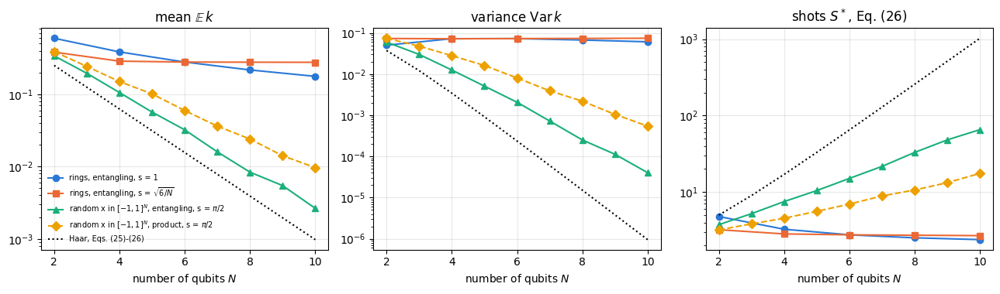
The sampled Haar states reproduce Eq. (25): mean \(0.01569\) against \(1/64=0.01562\), variance \(2.43\times10^{-4}\) against \(2.37\times10^{-4}\), and \(S^*=63.5\) against \(65\).
The two-ring data do not concentrate. At \(s=1\) the mean kernel value decreases from \(0.59\) at \(N=2\) to \(0.18\) at \(N=10\), but the variance stays between \(0.05\) and \(0.07\), and \(S^*\) even decreases, from \(4.8\) to \(2.4\): a handful of shots per entry resolves the differences between kernel values. With \(s=\sqrt{6/N}\) all three quantities are nearly independent of \(N\). Whatever the number of qubits, these states are generated by two numbers, and they explore only a two-dimensional family of states inside the \(2^N\)-dimensional space.
Random data with one feature per qubit behave differently. With the entangling encoding the mean falls from \(0.34\) at \(N=2\) to \(2.6\times10^{-3}\) at \(N=10\), about a factor \(1.8\) per qubit, the variance from \(6\times10^{-2}\) to \(4\times10^{-5}\), and \(S^*\) grows from \(3.7\) to \(66\), approximately exponentially, more slowly than the Haar value \(2^N+1=1025\) at \(N=10\); the mean is \(2.7\) times the Haar value \(2^{-10}\). The product encoding concentrates more slowly still, mean \(9.7\times10^{-3}\) and \(S^*=17.5\) at \(N=10\), because its kernel is a product of independent single-qubit factors with independent features, \(\mathbb E\,k=(\mathbb E\,\kappa)^N\) and \(\mathbb E\,k^2=(\mathbb E\,\kappa^2)^N\). For small \(\mathbb E\,k\), Eq. (26) gives \(S^*\approx\mathbb E\,k/\mathrm{Var}\,k=(\mathbb E\,\kappa)^N/\big[(\mathbb E\,\kappa^2)^N-(\mathbb E\,\kappa)^{2N}\big]\), which grows like \((\mathbb E\,\kappa/\mathbb E\,\kappa^2)^N\); the measured moments correspond to a factor of about \(1.3\) per qubit. In both cases the growth is exponential in \(N\): an encoding that spreads \(N\) independent features over the Hilbert space produces kernel values that a device can resolve only with exponentially many shots. Section 9 shows the consequence for the classification of the rings, where it is mild.
Code
section_timer("9 finite shots")
9. Classification with kernels estimated from finite shots
On a device every entry of the training kernel matrix and of the test-versus-training matrix is an estimate from \(S\) shots of the inversion test. The cell draws the counts directly from the binomial distribution with the exact kernel as success probability, which Section 4.4 showed to be equivalent to sampling bit strings; the diagonal is set to its known value \(1\) and the training matrix is kept symmetric (each pair measured once). A matrix of estimates is not PSD in general. We train the SVM on it as it is, and also after the common repair of setting its negative eigenvalues to zero, \(\hat K\to V\max(\Lambda,0)V^{\rm T}\), which gives the nearest PSD matrix in the Frobenius norm \(\Vert A\Vert_F=\big(\sum_{ij}A_{ij}^2\big)^{1/2}\). Two kernels are compared on the two-ring set: the entangling encoding with \(N=6\), \(s=1\), used so far, and with \(N=10\), \(s=2\), a narrower kernel with much smaller off-diagonal values (Section 7). Every split and every number of shots has its own random key. The total number of circuit runs for one training matrix is \(S\,M_{\rm tr}(M_{\rm tr}-1)/2\), about \(7\times10^3\,S\) for \(M_{\rm tr}=120\).
Code
# ==============================================================================# STEP 16: test accuracy versus shots per kernel entry (binomial estimates, raw and PSD-repaired)# ==============================================================================def shot_kernel(key, K, shots, symmetric):"""Estimate of K from `shots` inversion-test shots per entry: Binomial(shots, K) / shots. If `symmetric`, only the upper triangle is drawn and mirrored, and the diagonal is set to 1 (known exactly). """ est = jax.random.binomial(key, shots, jnp.clip(K, 0.0, 1.0)).astype(RDTYPE) / shotsif symmetric: upper = jnp.triu(est, 1) est = upper + upper.T + jnp.eye(K.shape[0], dtype=RDTYPE)return estdef psd_repair(K):"""Nearest positive semidefinite matrix in the Frobenius norm: negative eigenvalues set to zero.""" lam, V = np.linalg.eigh(np.asarray(K))return (V * np.maximum(lam, 0.0)) @ V.T, int(np.sum(lam <0)), lam[0]SHOTS = [10, 30, 100, 1000, 10000]shot_res = {}for (N, s) in ((6, 1.0), (10, 2.0)): Kq = np.asarray(quantum_kernel(X, X, s, N)) acc_exact, _ = fit_and_score(np.asarray(Kq), y, tr, te, 2) rows = []for n_sh, shots inenumerate(SHOTS): K_raw, K_fix, n_neg = [], [], []for sp inrange(N_SPLITS): k_tr, k_te = jax.random.split(jax.random.PRNGKey(1000* N +10* n_sh + sp)) Ktt = np.asarray(shot_kernel(k_tr, Kq[np.ix_(tr[sp], tr[sp])], shots, True)) Kte = np.asarray(shot_kernel(k_te, Kq[np.ix_(te[sp], tr[sp])], shots, False)) Kfix, nn, _ = psd_repair(Ktt) n_neg.append(nn)# assemble per-split full matrices so that fit_and_score can index themfor store, Kt in ((K_raw, Ktt), (K_fix, Kfix)): Kf = np.zeros((X.shape[0], X.shape[0])) Kf[np.ix_(tr[sp], tr[sp])] = Kt Kf[np.ix_(te[sp], tr[sp])] = Kte store.append(Kf) a_raw, _ = fit_and_score(np.stack(K_raw), y, tr, te, 2) a_fix, _ = fit_and_score(np.stack(K_fix), y, tr, te, 2) rows.append((*mean_and_se(a_raw), *mean_and_se(a_fix), np.mean(n_neg))) shot_res[(N, s)] = (np.array(rows), mean_and_se(acc_exact)) off_vals = Kq[~np.eye(Kq.shape[0], dtype=bool)]print(f"N = {N}, s = {s}: exact kernel {100* np.mean(acc_exact):.1f} +- {100* mean_and_se(acc_exact)[1]:.1f} %; "f"off-diagonal entries: mean {off_vals.mean():.3f}, fraction below 0.05: {np.mean(off_vals <0.05):.2f}, "f"S* of Eq. (26) {offdiag_stats(Kq)[2]:.1f}")for shots, r inzip(SHOTS, rows):print(f" S = {shots:6d}: raw {100* r[0]:5.1f} +- {100* r[1]:3.1f} %, PSD-repaired {100* r[2]:5.1f} +- "f"{100* r[3]:3.1f} %, negative eigenvalues of the training matrix: {r[4]:.1f} of {tr.shape[1]}")fig, ax = plt.subplots(figsize=(6.4, 4.0))for k, ((N, s), (rows, (m_ex, se_ex))) inenumerate(shot_res.items()): ax.errorbar(SHOTS, 100* rows[:, 0], yerr=100* rows[:, 1], marker="o", color=PALETTE[2* k], capsize=3, label=f"$N={N}$, $s={s:g}$, raw estimate") ax.errorbar(SHOTS, 100* rows[:, 2], yerr=100* rows[:, 3], marker="s", mfc="none", ls="--", color=PALETTE[2* k], capsize=3, label=f"$N={N}$, $s={s:g}$, PSD-repaired") ax.axhspan(100* (m_ex - se_ex), 100* (m_ex + se_ex), color=PALETTE[2* k], alpha=0.15)ax.set_ylim(90, 100.5) # chance level 50 % lies far belowax.set_xscale("log")ax.set_xlabel("shots per kernel entry $S$")ax.set_ylabel("test accuracy (%)")ax.set_title("two rings, entangling encoding (bands: exact kernel)")ax.legend(fontsize=7, loc="lower right")fig.tight_layout()plt.show()
N = 6, s = 1.0: exact kernel 99.9 +- 0.1 %; off-diagonal entries: mean 0.279, fraction below 0.05: 0.21, S* of Eq. (26) 2.8
S = 10: raw 94.0 +- 0.7 %, PSD-repaired 94.6 +- 0.9 %, negative eigenvalues of the training matrix: 50.2 of 120
S = 30: raw 97.0 +- 0.5 %, PSD-repaired 98.5 +- 0.5 %, negative eigenvalues of the training matrix: 48.3 of 120
S = 100: raw 98.8 +- 0.5 %, PSD-repaired 99.4 +- 0.3 %, negative eigenvalues of the training matrix: 45.5 of 120
S = 1000: raw 99.9 +- 0.1 %, PSD-repaired 99.9 +- 0.1 %, negative eigenvalues of the training matrix: 41.4 of 120
S = 10000: raw 99.9 +- 0.1 %, PSD-repaired 99.9 +- 0.1 %, negative eigenvalues of the training matrix: 37.1 of 120
N = 10, s = 2.0: exact kernel 98.3 +- 0.3 %; off-diagonal entries: mean 0.049, fraction below 0.05: 0.83, S* of Eq. (26) 2.4
S = 10: raw 96.8 +- 1.0 %, PSD-repaired 96.4 +- 1.0 %, negative eigenvalues of the training matrix: 26.0 of 120
S = 30: raw 98.0 +- 0.4 %, PSD-repaired 98.1 +- 0.3 %, negative eigenvalues of the training matrix: 20.4 of 120
S = 100: raw 97.8 +- 0.3 %, PSD-repaired 97.6 +- 0.3 %, negative eigenvalues of the training matrix: 17.7 of 120
S = 1000: raw 98.3 +- 0.3 %, PSD-repaired 98.3 +- 0.3 %, negative eigenvalues of the training matrix: 12.5 of 120
S = 10000: raw 98.3 +- 0.3 %, PSD-repaired 98.3 +- 0.3 %, negative eigenvalues of the training matrix: 8.6 of 120
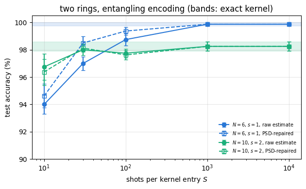
With the kernel of \(N=6\), \(s=1\) the accuracy falls from \(99.9\,\%\) (exact kernel and \(S\geq1000\)) to \(98.8\,\%\) at \(S=100\), \(97.0\,\%\) at \(S=30\) and \(94.0\,\%\) at \(S=10\). Removing the negative eigenvalues helps at intermediate shot numbers, \(98.5\,\%\) instead of \(97.0\,\%\) at \(S=30\) and \(99.4\,\%\) instead of \(98.8\,\%\) at \(S=100\). The estimated training matrix is far from PSD: it has about 50 negative eigenvalues out of 120 at \(S=10\) and still 37 at \(S=10^4\), because the exact matrix has many eigenvalues close to zero, which any perturbation pushes to either sign. The SVM nevertheless trains on the raw estimates without difficulty, as the sigmoid kernel did in Section 3.5.
The kernel with \(N=10\), \(s=2\) has smaller off-diagonal values and a slightly lower exact accuracy, \(98.3\,\%\), but it is more robust to shot noise: \(96.8\,\%\) at \(S=10\) and the exact value from \(S=1000\) on. Eq. (20) explains part of this: the variance of an inversion-test estimate, \(k(1-k)/S\), is small when \(k\) is small, and the off-diagonal entries of this kernel are small: their mean is \(0.049\) against \(0.279\) for \(N=6\), \(s=1\), and \(83\,\%\) of them lie below \(0.05\). A device would need about \(7\times10^3\,S\) circuit runs for one training matrix, \(7\times10^5\) at \(S=100\), plus \(9.6\times10^3\,S\) for the test points. These numbers are modest because the kernel values of the ring data do not concentrate (Section 8): \(S^*\) of Eq. (26) is \(2.8\) for the six-qubit kernel and \(2.4\) for the ten-qubit one, while the random data of Section 8 at \(N=10\) have \(S^*=66\), 27 times more.
Code
section_timer("10 cost")
10. Cost of the simulation
The cell times the two ways of computing the kernel matrix of the 200 points of the two-ring set for \(N=6\) and \(N=10\), each compiled once before timing, and one batch of ten SVMs. It closes with the wall-clock time of each section of this notebook.
Code
# ==============================================================================# STEP 17: timings of the kernel matrix and of the SVM solver# ==============================================================================def timed(fn, *args, repeats=3):"""Median wall time of an already compiled call (one warm-up call first).""" jax.block_until_ready(fn(*args)) ts = []for _ inrange(repeats): t0 = time.perf_counter() jax.block_until_ready(fn(*args)) ts.append(time.perf_counter() - t0)returnfloat(np.median(ts))for N in (6, 10): t_pairs = timed(lambda A: inversion_test_p0(A, A, 1.0, N), X2[:20], repeats=1) t_states = timed(lambda A: quantum_kernel(A, A, 1.0, N), X2, repeats=1)print(f"N = {N:2d}: inversion test, 20 x 20 pairs: {t_pairs *1e3:7.1f} ms ({t_pairs /400*1e6:.1f} us per pair);"f" state shortcut, 200 x 200: {t_states *1e3:6.1f} ms")K10 = jnp.asarray(np.stack([np.asarray(K_sim)[np.ix_(t, t)] for t in tr]))Y10 = jnp.asarray(np.stack([np.where(y[t] ==1, 1.0, -1.0) for t in tr]))t_svm = timed(lambda A, B: svm_solve_batch(A, B, C_SVM), K10, Y10, repeats=1)print(f"10 SVMs of {tr.shape[1]} points, {N_ITER} FISTA iterations, one vmapped call: {t_svm:.2f} s")section_timer("end")print("\nwall-clock time per section:")for k, v in SECTION_TIMES.items():if k !="end":print(f" {k:36s}{v:6.1f} s")print(f" {'total (Sections 3-10)':36s}{sum(v for k, v in SECTION_TIMES.items() if k !='end'):6.1f} s")
N = 6: inversion test, 20 x 20 pairs: 4.0 ms (10.1 us per pair); state shortcut, 200 x 200: 4.4 ms
N = 10: inversion test, 20 x 20 pairs: 74.9 ms (187.3 us per pair); state shortcut, 200 x 200: 69.1 ms
10 SVMs of 120 points, 600 FISTA iterations, one vmapped call: 0.04 s
wall-clock time per section:
3 classical kernel methods 5.5 s
4 quantum feature map 4.4 s
5 classification at N = 6 4.0 s
6 comparison with classical kernels 6.2 s
7 effect of the encoding 4.2 s
8 concentration 8.0 s
9 finite shots 3.8 s
10 cost 1.7 s
total (Sections 3-10) 37.8 s
The timings depend on the machine and its load; on a shared CPU they vary by a factor of a few between runs. In the run shown, one inversion-test circuit costs about \(10\,\mu\)s at \(N=6\) and \(0.2\) ms at \(N=10\), while the shortcut computes the whole \(200\times200\) matrix in a few milliseconds at \(N=6\) and in about \(70\) ms at \(N=10\). The forty thousand overlap circuits of the full matrix at \(N=10\) would take about eight seconds, about a hundred times longer than the shortcut, which prepares each of the 200 states once and obtains all overlaps from one matrix product. Ten SVMs of 120 points take a fraction of a second in one vmapped call. The cost of a state grows as \(2^N\) times the number of gates, and the cost of the kernel matrix as \(M\) states plus \(M^2\,2^N\) for the product; for \(N\leq10\) and a few hundred points everything fits in memory. The section times above include compilation, which dominates for the many encoding circuits of Sections 7 and 8.
11. Key takeaways
A kernel method needs only the kernel matrix. The SVM dual, Eq. (9), contains the feature vectors only through \(K_{ij}\), and the decision function, Eq. (12), only through kernel values with the training points. The JAX solver (FISTA with an exact projection, Eq. (14)) reached a relative duality gap of \(9\times10^{-11}\) and agreed with scikit-learn to \(4\times10^{-7}\).
A quantum kernel is an overlap of encoded states. The fidelity kernel of Eq. (5) is PSD because it is the scalar product of \(\vert\phi\rangle\otimes\vert\bar\phi\rangle\), Eq. (17); the modulus of the overlap is not PSD (71 negative eigenvalues of 200). The inversion test, run as \(10^4\) circuits with a double vmap, agreed with the state shortcut to \(3\times10^{-15}\), and the swap test on \(2N+1\) qubits gave \((1+k)/2\) to round-off but needs about \((1+k)/k\) times more shots.
The data scale is a bandwidth. The product encoding with one layer is close to a Gaussian kernel with \(\gamma_{\rm eff}=Ns^2/d\), Eq. (19). Large scales fail: the entangling kernel overfits (test accuracy \(62\,\%\) at \(s=6\) with training accuracy \(99\,\%\)), the periodic product kernel underfits and drops to guessing.
No advantage on the rings. With bandwidths tuned on held-out data over ten splits, the entangling, product and Gaussian kernels reached \(99.5\)–\(99.6\,\%\) on two rings and \(98.1\)–\(98.5\,\%\) on three, equal within the error bars; the linear kernel (\(62\,\%\) and \(34\,\%\)) and shuffled labels (\(49\,\%\) and \(33\,\%\)) stayed near the guessing level, as they must.
Kernel PCA shows the geometry. Three components hold \(45\,\%\) of the variance and separate the two rings by a plane; the kernel matrix sorted by class has a strong inner-ring block and weak, non-orthogonal off-diagonal blocks.
Expressive encodings concentrate. For random data with one feature per qubit the mean kernel value and its variance decay exponentially with \(N\), and the number of shots \(S^*\) needed to resolve the kernel grows with \(N\); Haar-random states give \(S^*=2^N+1\), Eq. (26). The two-feature ring data do not concentrate, and rescaling \(s\propto1/\sqrt N\) keeps their mean kernel value constant.
Shots and positivity. Kernel matrices estimated from \(S\) shots have tens of negative eigenvalues even at \(S=10^4\); for the six-qubit kernel the accuracy dropped from \(99.9\,\%\) to \(94\,\%\) at \(S=10\), and removing the negative eigenvalues recovered part of the loss at \(S=30\)–\(100\).
12. Exercises
★ Swap test or inversion test. Using Eqs. (20) and (22), compute the number of shots needed to estimate a kernel value \(k=0.05\) with standard deviation \(0.01\) by each test. (Check: \(475\) and \(9975\).)
★ The Haar reference. Repeat the Haar check of Section 8 for \(N=8\) with 300 states drawn from jax.random.split(jax.random.PRNGKey(21), 300) and compare \(S^*\) with Eq. (26). (Check: \(S^*\approx257\), sampled value \(256.7\).)
★★ Number of layers. Repeat the two-ring classification of Section 7 at \(N=6\), \(s=1\) for \(L=1,2,3\) (no tuning, ten splits). How do the mean off-diagonal kernel value and the test accuracy change? (Check: mean kernel values \(0.258\), \(0.279\), \(0.154\); test accuracies \(99.6\), \(99.9\) and \(98.6\,\%\).)
★★ Kernel-target alignment. The alignment \(A=\sum_{ij}K_{ij}y_iy_j\big/\big(M\Vert K\Vert_F\big)\) measures how well \(K\) resembles the ideal matrix \(\mathbf y\mathbf y^{\rm T}\) (Hubregtsen et al., 2022). Compute it for the entangling kernel at \(N=6\) on all 200 points of the two-ring set for \(s\in\{0.25,0.5,0.75,1,1.25,1.5,2,3\}\). Which \(s\) maximises it, and does that agree with the scale chosen by validation in Section 6? (Check: maximum \(A=0.411\) at \(s=1.5\).)
★★ The pair angle of Havlíček et al. (extend the code). Replace the angle of the \(R_{ZZ}\) gates in feature_circuit by \(2(\pi-\tilde x_q)(\pi-\tilde x_{q+1})\), keep \(R_z(2s\tilde x_q)\) with \(s=1\), and repeat the untuned two-ring classification at \(N=6\). (Check: mean off-diagonal kernel value \(0.076\), test accuracy \(98.0\,\%\).)
★★ Kernel ridge classification. Replace the SVM by the solution of \((K+\lambda\mathbb 1)\boldsymbol\beta=\mathbf y\) and the decision function \(f(\mathbf x)=\sum_i\beta_ik(\mathbf x_i,\mathbf x)\). With \(\lambda=0.1\) and the entangling kernel at \(N=6\), \(s=1\), compare the test accuracy with the SVM over the ten splits. Which training points enter \(f\)? (Check: \(99.9\,\%\).)
★★★ A projected quantum kernel (physics). Huang et al. (2021) proposed kernels built from local quantities, for example \(k(\mathbf x,\mathbf x')=\exp\big(-\gamma\sum_q\Vert\rho_q(\mathbf x)-\rho_q(\mathbf x')\Vert_F^2\big)\) with the one-qubit reduced density matrices \(\rho_q\). For the random data of Section 8 (150 points, keys jax.random.PRNGKey(300 + N), entangling encoding, \(s=\pi/2\), \(\gamma=1\)), compute \(S^*\) of Eq. (26) for \(N=4,6,8,10\) and compare with the fidelity kernel. Why do local quantities concentrate more slowly? (Check: \(S^*\) of the projected kernel \(7.5\), \(10.9\), \(12.7\), \(18.4\); of the fidelity kernel \(7.5\), \(14.4\), \(32.8\), \(63.6\).)
References
V. Havlíček, A. D. Córcoles, K. Temme, A. W. Harrow, A. Kandala, J. M. Chow and J. M. Gambetta, Supervised learning with quantum-enhanced feature spaces, Nature 567, 209 (2019) — the quantum kernel estimator and the variational quantum classifier, run on two superconducting qubits; encoding circuits of the type of Eq. (16).
M. Schuld and N. Killoran, Quantum machine learning in feature Hilbert spaces, Phys. Rev. Lett. 122, 040504
— the encoding of data into quantum states as a feature map, and kernels computed from state overlaps.
Y. Liu, S. Arunachalam and K. Temme, A rigorous and robust quantum speed-up in supervised machine learning, Nat. Phys. 17, 1013 (2021) — a classification problem based on the discrete logarithm on which a quantum-kernel SVM is provably better than any classical learner, under the assumption that the discrete logarithm is hard.
H.-Y. Huang, M. Broughton, M. Mohseni, R. Babbush, S. Boixo, H. Neven and J. R. McClean, Power of data in quantum machine learning, Nat. Commun. 12, 2631 (2021) — classical learners given data can compete with quantum models; a test for a potential quantum advantage of a kernel on a given data set.
S. Thanasilp, S. Wang, M. Cerezo and Z. Holmes, Exponential concentration in quantum kernel methods, Nat. Commun. 15, 5200 (2024) — concentration of kernel values from expressivity, global measurements, entanglement and noise, and the resulting number of shots (Section 8).
R. Shaydulin and S. M. Wild, Importance of kernel bandwidth in quantum machine learning, Phys. Rev. A 106, 042407 (2022) — the data scale as the bandwidth of a quantum kernel (Sections 4.3 and 7).
T. Hubregtsen, D. Wierichs, E. Gil-Fuster, P.-J. H. S. Derks, P. K. Faehrmann and J. J. Meyer, Training quantum embedding kernels on near-term quantum computers, Phys. Rev. A 106, 042431 (2022) — trainable encodings optimised by kernel-target alignment, noise and finite sampling in kernel matrices (Exercise 4).
H. Buhrman, R. Cleve, J. Watrous and R. de Wolf, Quantum fingerprinting, Phys. Rev. Lett. 87, 167902 (2001) — the swap test (Section 4.4).
C. Cortes and V. Vapnik, Support-vector networks, Mach. Learn. 20, 273 (1995) — the soft-margin support vector machine of Eq. (6).
B. Schölkopf, A. Smola and K.-R. Müller, Nonlinear component analysis as a kernel eigenvalue problem, Neural Comput. 10, 1299 (1998) — kernel principal component analysis (Section 5.2).
B. Schölkopf and A. J. Smola, Learning with Kernels (MIT Press, Cambridge MA, 2002) — kernels, Mercer’s theorem and the SVM.
A. Beck and M. Teboulle, A fast iterative shrinkage-thresholding algorithm for linear inverse problems, SIAM J. Imaging Sci. 2, 183 (2009) — the accelerated projected gradient method (FISTA) of Section 3.4.
Marcin Płodzień, PhD
Citation: M. Płodzień, Quantum Many-Body Simulation: from a single spin to quantum machine learning (2026), https://marcinplodzien.github.io/quantum-many-body-simulation/